बी.एड पाठ योजनाएँ — हिंदी अनुवाद
विज्ञान / जीव विज्ञान | 15 पाठ योजनाएँ (Lesson Plans 1–15) | संपूर्ण, विस्तृत एवं सटीक अनुवाद
पाठ योजना 1 — पौधों में अलैंगिक जनन
पाठ योजना - 1
नाम: निहारिका दिनांक: 18/9/24 विद्यालय: सरस्वती बाल विद्या अवधि: 30-40 मिनट विषय: विज्ञान (जीव विज्ञान) पीरियड: IV पाठ्यविषय: पौधों में अलैंगिक जनन (Asexual Reproduction in Plants) कक्षा: 4वीं
छात्रों की संख्या: 27
# सामान्य उद्देश्य:
- विज्ञान सीखने में छात्रों में रुचि विकसित करना।
- कल्पना, तर्क और अवलोकन की क्षमताओं का विकास करना।
- छात्रों में वैज्ञानिक दृष्टिकोण और वैज्ञानिक रुचि विकसित करना।
- वास्तविकता के बारे में समझ विकसित करना और उन्हें वास्तविक जीवन में लागू करना।
- उन्हें पाठ में ज्ञान सामग्री प्राप्त करने में सक्षम बनाना।
# विशिष्ट उद्देश्य:
- छात्रों को पौधे कैसे जनन करते हैं, इसके बारे में जानने में सक्षम बनाना।
- छात्रों को पौधों में जनन के तरीकों का वर्णन करने में सक्षम बनाना।
- छात्रों को बीज निर्माण (spore formation) के बारे में सीखने में सक्षम बनाना।
- छात्रों को कायिक प्रवर्धन (Vegetative Propagation) (vegetative propagation) द्वारा पौधों में जनन सीखने में सक्षम बनाना।
- छात्रों को अलैंगिक जनन के तरीकों का अवलोकन करने में सक्षम बनाना।
B.Ed विज्ञान/जीव विज्ञान पाठ योजना — निकाला गया पाठ्य
शीर्षक / खोलना
- पूर्व ज्ञान: छात्र को जनन, जड़ी-बूटियाँ,ाड़ियाँ, पेड़, फूल आदि के बारे में कम से कम सामान्य परिचय होना चाहिए।
शिक्षण सहायक सामग्री
- शिक्षण सहायक सामग्री: श्वेत बोर्ड (White board), मार्कर, मॉडल, चार्ट, खड़ी, डस्टर, पॉइंटर आदि।
प्रस्तावना
- प्रस्तावना: —
पूर्व ज्ञान (शिक्षक का प्रश्न / छात्र का उत्तर)
| क्र.सं. | शिक्षक का प्रश्न | छात्र का उत्तर |
|---|---|---|
| 1. | आप जनन के बारे में क्या जानते हैं? | एक जैविक प्रक्रिया जिसके द्वारा नए संतानों का उत्पादन अपने "अभिभावकों" से होता है। |
| 2. | आप पौधों के बारे में क्या जानते हैं? | पौधे जड़ी-बूटियों, झाड़ियों, पेड़ों और चढ़ने वाले पौधों में वर्गीकृत हैं। |
| 3. | जड़ी-बूटियों की व्याख्या करें। | एक जड़ी-बूटी — तना (हर्बेसियस) पौधा, जिसका आमतौर पर बढ़ने के मौसम के अंत में हरा, नरम तना होता है। |
| 4. | झाड़ियों की व्याख्या करें। | आपस में संबंधित कम ऊंचाई का लकड़ी वाला पौधा, जिसके आधार से कई तने निकलते हैं। |
| 5. | कुछ फूलों के कुछ उदाहरण दें। | सूर्यमुखी, ट्यूलिप, गेंदा आदि। |
विषय का कथन
- विषय का कथन: अब शिक्षक विषय "पौधों में अलैंगिक जनन" की घोषणा करेंगे।
प्रस्तुतीकरण
- प्रस्तुतीकरण: —
प्रस्तुतीकरण तालिका
| शिक्षण बिंदु | शिक्षक की क्रिया | छात्र की क्रिया | श्यामपट्ट पर कार्य |
|---|---|---|---|
| प्रस्तावना — परिभाषा | अधिकांश पौधों में जड़, तना और पत्ते होते हैं। इन्हें पौधे के वानस्पतिक भाग (Vegetative parts) कहा जाता है। एक निश्चित अवधि के बाद वृद्धि के बाद, अधिकांश पौधे फूल देते हैं। आपने शरद ऋतु में आम के पेड़ों के फूल खिलते हुए देखा होगा। हम फल खाते हैं और आमतौर पर बीजों को फेंक देते हैं। बीज अंकुरित होते हैं और नए पौधे बनाते हैं। | छात्र विषय के बारे में जानने में सक्षम हैं। | विषय: पौधों में अलैंगिक जनन |
| पौधों में जनन की परिभाषा | अपनी जाति का उत्पादन करना सभी जीव जीवों की एक विशेषता है। अपने अभिभावकों से नए व्यक्तियों का उत्पादन जनन के रूप में जाना जाता है। पौधों में जनन के विभिन्न तरीके हैं। | संकल्पनाओं को समझना सिखाया गया है। | अपने अभिभावकों से नए व्यक्ति का उत्पादन |
| पौधों में जनन के तरीके | पौधे अपने संतान का उत्पादन करने के कई तरीके हैं। इन्हें दो प्रकारों में वर्गीकृत किया गया है: (i) अलैंगिक (ii) लैंगिक जनन | वे समझने की कोशिश करते हैं और सिखाए जाते हैं। | जनन के तरीके: (i) अलैंगिक (ii) लैंगिक |
B.Ed विज्ञान/जीव विज्ञान पाठ योजना (पृष्ठ)
पूर्व ज्ञान: छात्रों को जनन, जड़ी-बूटियाँ, झाड़ियाँ, पेड़, पत्ते, शाखाएँ, फूल आदि के बारे में कम से कम सामान्य परिचय होना चाहिए।
शिक्षण सहायक सामग्री: श्वेत बोर्ड (White board), मार्कर, मॉडल, चार्ट, खड़ी, डस्टर, पॉइंटर आदि।
प्रस्तावना:
| क्र.सं. | शिक्षक का प्रश्न | छात्र का उत्तर |
|---|---|---|
| 1. | आप जनन के बारे में क्या जानते हैं? | एक जैविक प्रक्रिया जिसके द्वारा नए संतानों का उत्पादन अपने अभिभावकों से होता है। |
| 2. | आप पौधों के बारे में क्या जानते हैं? | पौधे जड़ी-बूटियों, झाड़ियों, पेड़ों और चढ़ने वाले पौधों में वर्गीकृत हैं। |
| 3. | जड़ी-बूटियों की व्याख्या करें। | एक नरम-तना फूल वाला पौधा, जो आमतौर पर प्रत्येक वृद्धि मौसम के अंत में मर जाता है। |
| 4. | झाड़ियों की व्याख्या करें। | आपस में संबंधित कम ऊंचाई का लकड़ी वाला पौधा, जिसके आधार से कई तने निकलते हैं। |
| 5. | कुछ फूलों के कुछ उदाहरण दें। | सूर्यमुखी, ट्यूलिप, गेंदा आदि। |
विषय का कथन: अब शिक्षक विषय की घोषणा करेंगे, आज हम "पौधों में अलैंगिक जनन" के बारे में पढ़ेंगे।
प्रस्तुतीकरण:
| शिक्षण बिंदु | शिक्षक की क्रियाएँ | छात्र की क्रिया | श्यामपट्ट पर कार्य |
|---|---|---|---|
| प्रस्तावना | अधिकांश पौधों में जड़ें, तने और पत्ते होते हैं। इन्हें पौधे के वानस्पतिक भाग (Vegetative parts) कहा जाता है। एक निश्चित अवधि के बाद वृद्धि के बाद, अधिकांश पौधे फूल देते हैं। आपने शरद ऋतु में आम के पेड़ के फूल खिलते हुए देखा होगा। हम फल खाते हैं और आमतौर पर बीजों को फेंक देते हैं, बीज अंकुरित होते हैं और नए पौधे बनाते हैं। | छात्र विषय के बारे में जानने में सक्षम हैं। | विषय: पौधों में अलैंगिक जनन |
| परिभाषा | अपनी जाति का उत्पादन करना सभी जीव जीवों की एक विशेषता है। अपने अभिभावकों से नए व्यक्तियों का उत्पादन जनन के रूप में जाना जाता है। पौधों में जनन के विभिन्न तरीके हैं। | संकल्पनाओं को समझना सिखाया गया है। | अपने अभिभावकों से नए व्यक्ति का उत्पादन |
| जनन के तरीके | ये कई तरीके हैं जिनके द्वारा पौधे अपनी संतान का उत्पादन करते हैं। इन्हें 2 प्रकारों में वर्गीकृत किया गया है: (i) अलैंगिक (ii) लैंगिक जनन | शिक्षित विषय को समझने की कोशिश करें। | जनन के तरीके (i) अलैंगिक |
पाठ योजना — जारी पृष्ठ (अलैंगिक जनन)
प्रस्तुतीकरण तालिका (जारी)
| शिक्षण बिंदु | शिक्षक की क्रिया | छात्र की क्रिया | श्यामपट्ट पर कार्य |
|---|---|---|---|
| अलैंगिक जनन | अलैंगिक जनन में नए पौधे बीज के उत्पादन के बिना प्राप्त किए जाते हैं। अलैंगिक जनन के विभिन्न प्रकार हैं — (i) वृद्धि द्वारा प्रवर्धन (ii) कलिकाकरण (Budding) (iii) टूटना (Fragmentation) (iv) बीज निर्माण (spore formation) | कृपया इसे फिर से समझाएं | अलैंगिक जनन के प्रकार |
| वृद्धि द्वारा प्रवर्धन | यह अलैंगिक जनन का एक प्रकार है जिसमें नए पौधे जड़ों, तनों, पत्तों और कलिकाओं से उत्पन्न होते हैं। | अपने नोटबुक में लिखें | |
| कलिकाकरण (Budding) | खमीर कोशिका से निकलने वाला छोटा-बुलबुला जैसा उभार कली कहलाता है। कली धीरे-धीरे बढ़ती है और मूल कोशिका से अलग हो जाती है और नई बनाती है | शिक्षित विषय को समझने की कोशिश करें। | |
| टूटना (Fragmentation) | आपने तालाबों या अन्य खड़े — जल निकायों में गीले हरे पैच देखा होगा वहाँ शैवाल होते हैं। | नोटबुक में लिखें | |
| बीज निर्माण (Spore formation) | बीज अलैंगिक जनन शरीर हैं। प्रत्येक बीज कठोर सुरक्षात्मक कोट से ढका होता है ताकि अनुकूल न होने वाली स्थिति का सामना कर सके। | तालिका का ध्यानपूर्वक अवलोकन करें और लिखें |
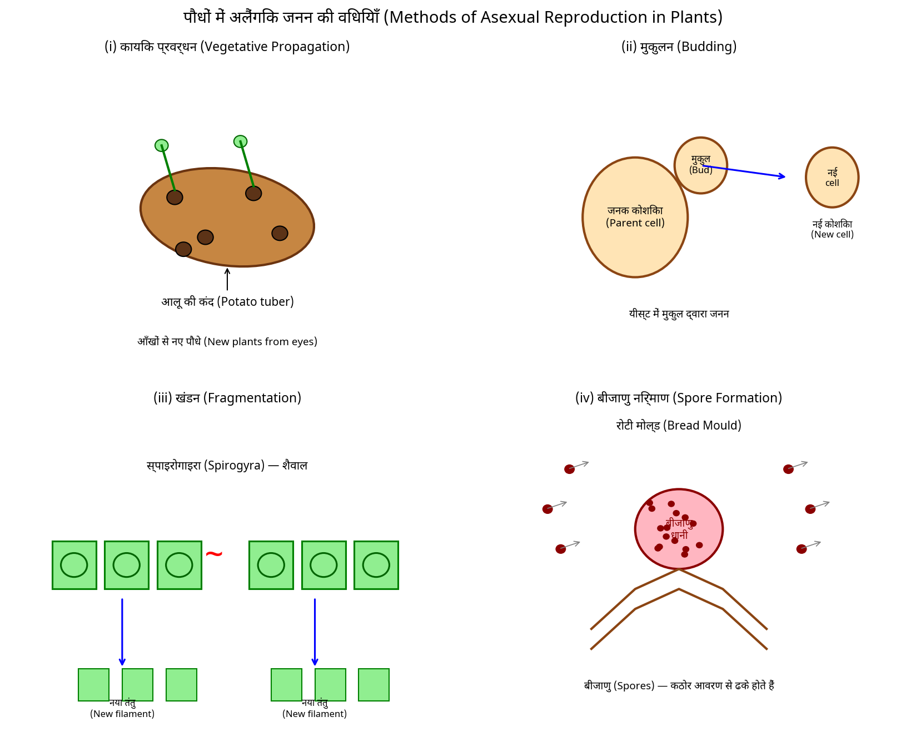
पुनरावृत्ति:
- प्रश्न 1. अलैंगिक और लैंगिक जनन के बीच अंतर बताएं?
- प्रश्न 2. कायिक प्रवर्धन (Vegetative Propagation) क्या है?
- प्रश्न 3. वृद्धि द्वारा प्रवर्धन के /कुछ उदाहरणों/ की व्याख्या करें?
- प्रश्न 4. पौधों के किस भाग को अलैंगिक रूप से बढ़ाया या उपयोग किया जा सकता है?
- प्रश्न 5. अलैंगिक जनन के विभिन्न तरीकों का वर्णन करें? समझाएं।
गृहकार्य:
प्रश्न 1. रिक्त स्थान भरें : →
a) पौधे के वानस्पतिक भाग (Vegetative parts) से नए व्यक्तियों का उत्पादन ____________ कहलाता है।
b) बीज वितरण ______, ______ और ____________ के माध्यम से होता है।
प्रश्न 2. स्तंभ I में दिए गए आइटम को स्तंभ II से मिलाएं।
| स्तंभ I | स्तंभ II |
|---|---|
| a. कली (Bud) | (i) मेपल (Maple) |
| b. आँखें (Eyes) | (ii) स्पाइरोगाइरा (Spirogyra) |
| c. टूटना (Fragmentation) | (iii) यीस्ट (Yeast) |
| d. पंख (Wings) | (iv) ब्रेड मोल्ड (Bread mould) |
| e. बीज (Spores) | (v) आलू (Potato) |
प्रश्न 3. सही उत्तर/विकल्प पर चिह्न लगाएं —
a. एक बीज उत्पादक पौधा है —
- (i) गुलाब (iv) आलू
- (ii) ब्रेड मोल्ड (iii) अदरक |
पाठ योजना 2 — जल प्रदूषण
पाठ योजना - 2
| क्षेत्र | विवरण |
|---|---|
| नाम | निहारिका |
| तिथि | 20/9/23 |
| विद्यालय | सरस्वती बाल विद्या |
| अवधि | 30-40 मिनट |
| विषय | विज्ञान |
| पीरियड | III |
| पाठ्यविषय | जल प्रदूषण |
| कक्षा | 8वीं |
| छात्रों की संख्या | 27 |
सामान्य उद्देश्य:
- विज्ञान सीखने में छात्रों की रुचि विकसित करना।
- कल्पना, तर्क और अवलोकन की क्षमताओं का विकास करना।
- छात्रों में वैज्ञानिक दृष्टिकोण और वैज्ञानिक रुचि विकसित करना।
- स्वास्थ्य के बारे में जागरूकता विकसित करना और उन्हें वास्तविक जीवन में लागू करना।
- उन्हें पाठ में ज्ञान सामग्री प्राप्त करने में सक्षम बनाना।
विशिष्ट उद्देश्य:
- छात्र जल प्रदूषण (Water pollution) की परिभाषा को समझेंगे।
- गंगा कार्य योजना (Ganga action plan) जैसे केस स्टडी में रुचि विकसित करेंगे।
- छात्र समझेंगे कि जल कैसे प्रदूषित होता है?
- छात्र पेयजल (Potable water) की परिभाषा को समझेंगे।
- छात्र जल प्रदूषण कम करने के तरीकों के बारे में जानेंगे।
पूर्व ज्ञान:
शिक्षण सहायक सामग्री:
श्यामपट्ट, मार्कर, मॉडल, चार्ट, खड़ी, धूलकपट, संकेतक आदि।
प्रस्तावनात्मक प्रश्न:
| क्र. सं. | शिक्षक का प्रश्न | छात्र का उत्तर |
|---|---|---|
| 1. | मनुष्य की मूलभूत आवश्यकताएं क्या हैं? | हवा, जल, भोजन और आश्रय |
| 2. | हम कैसे जल प्राप्त करते हैं? | वर्षा, झीलें, तालाब, नदी आदि |
| 3. | कौन सा जल पीने के लिए उपयुक्त नहीं है? | प्रदूषित या दूषित जल |
| 4. | जल कैसे प्रदूषित होता है? | समस्याग्रस्त प्रश्न |
विषय का कथन:
अब, शिक्षक आज का विषय घोषित करेंगे कि हम "जल प्रदूषण" के बारे में पढ़ेंगे।
प्रस्तुतीकरण:
| शिक्षण बिंदु | शिक्षक की क्रिया | छात्र की क्रिया | श्यामपट्ट पर कार्य |
|---|---|---|---|
| प्रस्तावना | जल को प्रदूषित करने वाले पदार्थों को जल प्रदूषक (Water pollutants) कहा जाता है। जब भी हानिकारक पदार्थ जल में मिलते हैं, तो जल प्रदूषित हो जाता है। | ध्यानपूर्वक सुन रहे हैं | विषय: जल प्रदूषण, गंगा परियोजना: गंगा कार्य योजना 1985, एनएमसीजी 2016 (पीले रंग में हाइलाइट किया गया) |
| केस स्टडी | विश्व वन्यजीव कोष (World Wide Fund for Nature - WWF) द्वारा किए गए एक अध्ययन में पाया गया कि गंगा | छात्र विषय के बारे में पहचान करने में सक्षम हैं... |
पीले रंग में हाइलाइट किए गए श्यामपट्ट कार्य बॉक्स पर नोट: बॉक्स में निम्नलिखित हस्तलिखित पाठ और लेबल हैं:
- "विषय:" — जल प्रदूषण
- "गंगा परियोजना:" — गंगा कार्य योजना 1985, एनएमसीजी 2016
बी.एड विज्ञान/जीव विज्ञान पाठ योजना — जारी पृष्ठ (जल प्रदूषण)
प्रस्तुतीकरण तालिका (जारी)
| शिक्षण बिंदु | शिक्षक की गतिविधि | छात्रों की गतिविधि | श्यामपट्ट पर कार्य |
|---|---|---|---|
| दुनिया की 10 सबसे खतरनाक नदियों में से एक है। नदियों को बचाने के लिए एक भव्य योजना का नाम जीएपी (GAP) 1985 में शुरू की गई थी। इसका उद्देश्ब बढ़ती जनसंख्या, औद्योगीकरण और सीवेज को कम करना था। | विषय के बारे में। | ||
| जल कैसे प्रदूषित होता है? | कई उद्योग हानिकारक रासायनिक पदार्थों को निकालते हैं जो जल के प्रदूषण का कारण बनते हैं। निकले गए रासायनिक पदार्थ जैसे आर्सेनिक, लेड और फ्लोराइड्स। | अपने नोटबुक में लिख रहे हैं। | |
| पेयजल (Potable water) | पीने के लिए उपयुक्त जल को पेयजल कहा जाता है। आपने देखा है कि सीवेज ट्रीटमेंट प्लांट में विभिन्न भौतिक और रासायनिक प्रक्रियाएं कैसे काम करती हैं। | ध्यानपूर्वक तालिका का अवलोकन कर रहे हैं और लिख रहे हैं | पीने के लिए उपयुक्त जल को पेयजल कहा जाता है (पीले स्टिकी नोट पर लिखा गया जो श्यामपट्ट कार्य कॉलम में चिपकाया गया है) |
| पीने के लिए जल को कैसे सुरक्षित बनाया जा सकता है | 1. पहले ही देखा है कि जल को कैसे फिल्टर किया जाता है — कण्डल जैसा फिल्टर। 2. उबालने का उपयोग करना जो बैक्टीरिया को मार देता है। 3. क्लोरीनेशन → रासायनिक विधि | अपने नोटबुक में लिख रहे हैं। (हाँ लिखा — शिक्षक का चिह्न/हस्ताक्षर) | पीने के लिए जल को कैसे सुरक्षित बनाया जा सकता है :→ 1. जल फिल्टर का उपयोग करके 2. उबालकर 3. क्लोरीन और ब्लीचिंग पाउडर जोड़कर (पीले स्टिकी नोट पर लिखा गया जो श्यामपट्ट कार्य कॉलम में चिपकाया गया है) |
| कम करने के तरीके | 1. जल उपचार संयंत्र स्थापित करें। 2. प्रदूषित जल को सीधे नदियों या झीलों में न फेंकें। | ध्यानपूर्वक सुन रहे हैं |
पुनरावृत्ति :
प्रश्न 1. जल किस प्रकार से दूषित होता है, इसके विभिन्न तरीके बताएं?
प्रश्न 2. व्यक्तिगत स्तर पर, आप जल प्रदूषण कम करने में कैसे मदद कर सकते हैं?
प्रश्न 3. साफ, पारदर्शी जल हमेशा पीने के लिए उपयुक्त होता है, टिप्पणी करें।
गृहकार्य :
प्रश्न 1. आप अपने शहर के नगरपालिका निकाय का सदस्य हैं। उपायों की सूची तैयार करें।
प्रश्न 2. गंगा कार्य योजना क्या है?
पाठ योजना 3 — जल एवं जल चक्र
पाठ योजना-3
हेडर जानकारी
| फ़ील्ड | विवरण |
|---|---|
| नाम: | निहारिका |
| दिनांक: | 23/9/24 |
| विद्यालय: | सरस्वती बाल विद्या |
| अवधि: | 30–40 मिनट |
| विषय: | विज्ञान |
| पीरियड: | VI |
| **पाठ्यविषय | जल |
| कक्षा: | 6वीं |
| उप-विषय: | जल चक्र |
| छात्रों की संख्या: | 27 |
सामान्य उद्देश्य :→
- विज्ञान सीखने में छात्रों की रुचि विकसित करना।
- कल्पना, तर्क और अवलोकन की क्षमताओं का विकास करना।
- उन्हें पाठ में ज्ञान सामग्री प्राप्त करने में सक्षम बनाना।
- वैज्ञानिक दृष्टिकोण विकसित करना।
विशिष्ट उद्देश्य :→
- जल के गायब होने के जादू के बारे में समझना।
- छात्र वाष्पीकरण (evaporation) की प्रक्रिया को समझेंगे।
- छात्र जल के हानी को अर्थात् वाष्पोत्सर्जन (transpiration) को जानेंगे।
- छात्र बादल कैसे बनते हैं, इसे जानेंगे।
पूर्व ज्ञान :→ छात्रों के पास हवा, जल, पौधे, वर्षा आदि के बारे में कम से कम सामान्य परिचय होना चाहिए।
शिक्षण सहायक सामग्री :→ श्वेत बोर्ड (White board), मार्कर, मॉडल, चार्ट, खड़िया, डस्टर, पॉइंटर आदि।
प्रस्तावना :→
| क्र. सं. | शिक्षक का प्रश्न | छात्र का उत्तर |
|---|---|---|
| 1. | जीवित रहने के लिए हमें सबसे आवश्यक चीज क्या है? | ऑक्सीजन और जल |
| 2. | हम ऑक्सीजन कैसे प्राप्त करते हैं? | पौधों से |
| 3. | क्या हम बिना जल के जीवित रह सकते हैं? | नहीं |
| 4. | हम जल कैसे प्राप्त करते हैं? | वर्षा से |
| 5. | वर्षा कैसे होती है? | समस्याग्रस्त प्रश्न। |
विषय का कथन :→
अब, शिक्षक विषय की घोषणा करेंगे, हम "जल चक्र (Water cycle)" के बारे में पढ़ेंगे।
प्रस्तुतीकरण :→
| शिक्षण बिंदु | शिक्षक की क्रिया | छात्र की क्रिया | श्यामपट्ट पर कार्य |
|---|---|---|---|
| प्रस्तावना | जल का गायब होने का जादू → कई बार आपने देखा होगा कि फर्श पर फैला हुआ जल कुछ समय बाद सूख जाता है। इसी प्रकार, जब गीले कपड़े सूखते हैं तो जल गायब हो जाता है। यह जल कहाँ चला जाता है? | छात्र विषय के बारे में जानकारी प्राप्त करने में सक्षम हैं। | विषय :<br>जल चक्र |
| वाष्पीकरण की प्रक्रिया | दिन के समय, सूर्य की रोशनी समुद्र, नदी, झील और तालाबों के जल पर पड़ती है। खेत और अन्य भूमि क्षेत्र भी सूर्य की रोशनी प्राप्त करते हैं। इन सभी स्थानों से जल लगातार वाष्पों में बदलता रहता है। | सिखाए गए अवधारणा को समझना। | — |
चित्र (श्यामपट्ट पर चित्रण, पृष्ठ के निचले दाएँ कोने)
एक रंगीन चित्र दिखाता है:
- चित्र के ऊपरी बाएँ कोने में एक पीला सूर्य, जिसके आसपास और नीचे छोटे बिंदु/रेखाएँ सूर्य की किरणों या उठते हुए जल वाष्प का प्रतिनिधित्व कर रहे हैं।
- नीचे, एक रस्सी पर तीन कपड़े लटे हुए हैं (चित्र में रंगीन कटआउट/पेपर चिपकाए गए के रूप में दिखाया गया): एक संतरा रंग का कपड़ा (शर्ट/पतलून), एक नीला कपड़ा (जींस/पतलून), और एक हरा कपड़ा — सूर्य में सूखते हुए गीले कपड़ों का प्रतिनिधित्व करते हैं (वाष्पीकरण को दर्शाते हुए)।
B.Ed विज्ञान/जीव विज्ञान पाठ योजना (पृष्ठ — जारी)
प्रस्तुतीकरण (जारी)
| शिक्षण बिंदु | शिक्षक की क्रिया | छात्र की क्रिया | श्यामपट्ट पर कार्य |
|---|---|---|---|
| पौधों द्वारा जल का हानी | परिणामस्वरूप, जल वाष्प लगातार हवा में जुड़ता रहता है। बर्नर पर जल को गर्म करने पर, इसका वाष्पीकरण तेजी से होता है। पौधे अपने भोजन बनाने के लिए जल का एक हिस्सा उपयोग करते हैं और अपने विभिन्न भागों में कुछ जल को बनाए रखते हैं। इस जल का शेष हिस्सा वाष्पोत्सर्जन (transpiration) नामक प्रक्रिया द्वारा वाष्पित हो जाता है। | सिखाए गए विषय को समझने का प्रयास करें | (चित्र: एक घर के साथ एक नीलाित छत, आकाश में सूर्य, एक हरा पेड़, और ज़मीन पर एक पत्थर/चट्टान। जल वाष्प उठता हुआ दिखाया गया है। नीचे लेबल: "छाया में और धूप में वाष्पीकरण।") |
| बादल कैसे बनते हैं? | बर्फीले ग्लास की ठंडी सतह इसके आसपास की हवा को ठंडा करती है और हवा का जल वाष्प ग्लास की सतह पर संघनित हो जाता है जिसे संघनन (condensation) कहते हैं। कुछ जल कीतरें इतने भारी हो जाती हैं कि गिरने लगती हैं। ये गिरती हुई जल की कीटरें जो हम वर्षा कहते हैं, वे हैं। | कृपया इसे फिर से समझाएं | (चित्र: शीर्ष में बर्फ के घनों वाला एक ग्लास टंबलर; लेबलों की ओर तीर "बर्फ", "जल", "जल की कीटरें"।) (चित्र: नीले वर्षा बादल और गिरती हुई वर्षा की कीटरें; लेबल: "बादल", "वर्षा"।)* |
| जल चक्र | इस प्रकार जल का परिभ्रमण जल चक्र के रूप में जाना जाता है। जल चक्र एक निरंतर प्रक्रिया है। | ||
| यदि लंबे समय तक वर्षा न हो तो क्या होगा? | मिट्टी वाष्पीकरण और वाष्पोत्सर्जन द्वारा लगातार जल खोती रहती है। चूँकि यह वापस नहीं लाया जाता है। जल स्तर कम हो जाता है। यदि इससे सूखा (drought) होता है, तो भोजन और चारा प्राप्त करना मुश्किल हो जाता है। |
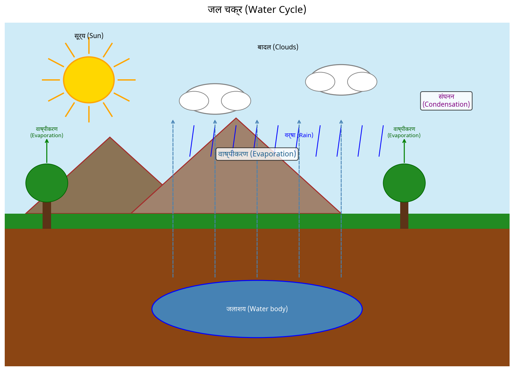
पुनरावृत्ति :→
प्रश्न 1. बादल कैसे बनते हैं?
प्रश्न 2. सूखा कब आता है?
प्रश्न 3. मान लीजिए आप अपना स्कूल का वर्दी जल्दी सूखाना चाहते हैं। क्या आंगीठी या हीटर के पास फैलाएंगे? यदि हाँ, तो कैसे?
गृहकार्य :→
प्रश्न 1. निम्नलिखित में रिक्त स्थान भरें :→
(a) अत्यधिक वर्षा __________ का कारण बन सकती है।
(b) एक वर्ष या उससे अधिक समय तक वर्षा न होना उस क्षेत्र में __________ का कारण बन सकता है।
(c) जल के वाष्प में बदलने की प्रक्रिया __________ कहलाती है।
प्रश्न 2. बताएं कि निम्नलिखित में से प्रत्येक का कारण वाष्पीकरण (evaporation) है या संघनन (condensation):
(a) गीले कपड़ों को इस्त्री करते समय उनसे उठता भाप __________।
(b) ठंडी सर्दी की सुबह कोहरा दिखाई देना __________।
(c) श्यामपट्ट को साफ करने के बाद उसका सूख जाना __________।
(d) गर्म ग्रिडल से उठती भाप __________।
पाठ योजना 4 — पौधों में पोषण
पाठ योजना - 4
हेडर जानकारी
| फ़ील्ड | विवरण | फ़ील्ड | विवरण |
|---|---|---|---|
| नाम : | निहारिका | दिनांक : | 25/9/21 |
| विद्यालय : | सरस्वती बाल विद्या | अवधि : | 30-40 मिनट |
| विषय : | विज्ञान | अवधि : | IV |
| विषय : | पौधों में पोषण | कक्षा : | 7वीं |
| छात्रों की संख्या : | 27 |
सामान्य उद्देश्य :→
- विद्यार्थियों में विज्ञान सीखने की रुचि विकसित करना।
- कल्पना, अर्थ और अवलोकन की क्षमता विकसित करना।
- विद्यार्थियों में वैज्ञानिक दृष्टिकोण और रुचि विकसित करना।
- वास्तविकता के प्रति समझ विकसित करना और उन्हें वास्तविक जीवन में लागू करना।
विशिष्ट उद्देश्य :→
- विद्यार्थी पौधों में पोषक तत्वों की आवश्यकता के बारे में जानेंगे।
- विद्यार्थी पौधों में पोषण के विभिन्न प्रकारों के बारे में जानेंगे।
- विद्यार्थी पौधों में प्रकाश संश्लेषण (Photosynthesis) की प्रक्रिया को समझने में सक्षम होंगे।
- विद्यार्थी विधानसभा में पोषक तत्वों को कैसे पुनर्भरण किया जाता है, इसे समझने में सक्षम होंगे।
पूर्व ज्ञान :→
विद्यार्थी के पास कम से कम पोषक तत्वों, पौधों के भागों, खाद्य पदार्थों के घटक, जीवित जीवों की खाद्य आवश्यकता आदि के बारे में सामान्य परिचय होना चाहिए।
शिक्षण सहायक सामग्री :→
सफेद बोर्ड, मार्कर, डस्टर, चार्ट, चॉक, रंगीन पॉइंटर आदि।
प्रस्तावना :→
| क्र.सं. | शिक्षक का प्रश्न | छात्र का उत्तर |
|---|---|---|
| Q1. | क्या आप बिना खाए जीवित रह सकते हैं? | नहीं |
| Q2. | आपको किस प्रकार का खाना खाने की आवश्यकता होती है? | हमें सभी प्रकार के पोषण वाले संतुलित आहार लेना चाहिए। |
| Q3. | खाद्य पदार्थों के घटक क्या हैं? | कार्बोहाइड्रेट्स, प्रोटीन, वसा, विटामिन और खनिज। |
| Q4. | पौधों को किस प्रकार के पोषक तत्वों की आवश्यकता होती है? | समस्याग्रस्त प्रश्न |
विषय का कथन :→
अब, शिक्षक विषय की घोषणा करेंगे, हम "पौधों में पोषण" के बारे में पढ़ेंगे।
प्रस्तुतीकरण :→
| शिक्षण बिंदु | शिक्षक की क्रिया | छात्र की क्रिया | श्यामपट्ट पर कार्य |
|---|---|---|---|
| प्रस्तावना | कार्बोहाइड्रेट्स, प्रोटीन, वसा, विटामिन और खनिज खाद्य पदार्थों के घटक पुराने पोषक तत्व हैं। पोषक तत्व जीवित जीवों को अपने शरीर का निर्माण करने, बढ़ने, अपने शरीर के क्षतिग्रस्त भागों की मरम्मत करने और जीवन प्रक्रियाओं को करने के लिए ऊर्जा प्रदान करने में सक्षम बनाते हैं। | विद्यार्थी विषय के बारे में जानने में सक्षम हैं। | विषय: पौधों में पोषण |
B.Ed विज्ञान/जीव विज्ञान पाठ योजना (जारी पृष्ठ — "पौधों में पोषण के प्रकार")
प्रस्तुतीकरण तालिका (जारी)
| शिक्षण बिंदु | शिक्षक की क्रिया | छात्र की क्रिया | श्यामपट्ट पर कार्य |
|---|---|---|---|
| पौधों का पोषण का प्रकार | पौधे वे एकमात्र जीव हैं जो H2O, CO2 और खनिजों का उपयोग करके अपने लिए खाना तैयार कर सकते हैं। वह पोषण का प्रकार जिसमें जीव सरल पदार्थों से अपना खाना खुद बनाते हैं, उसे स्वपोषी (Autotrophic) कहा जाता है। जानवर और अधिकांश अन्य जीव पौधों द्वारा तैयार किए गए खाना लेते हैं, उन्हें अपोषी (Heterotrophs) कहा जाता है। | सिखाए गए अवधारणा को समझना। | ये मूल रूप से दो पोषण के प्रकार हैं: 1. स्वपोषी पोषण 2. अपोषी पोषण |
| प्रकाश संश्लेषण (Photosynthesis) | पत्ते पौधों के खाना कारखाने हैं। खाने का संश्लेषण धूप की उपस्थिति में होता है, इसे प्रकाश संश्लेषण कहते हैं। प्रकाश संश्लेषण एक श्रृंखला रासायनिक प्रतिक्रियाएं हैं जिनमें CO2 और H2O महत्वपूर्ण हैं। CO2 पत्तों के छिद्रों कहे जाने वाले स्टोमेटा (Stomata) के माध्यम से पर्यावरण से प्राप्त होता है। प्रक्रिया :→ 6CO2 + 6H2O —(प्रकाश / क्लोरोफिल)→ C6H12O6 + 6O2 | सिखाए गए विषय को समझने का प्रयास करें। | [चित्र 1] एक पीले फूल वाला पौधा: सूरज (पीला, ऊपर-बाएँ), पत्ते से लेबल किए गए "CO2 + H2O" का तीर पौधे के अंदर इंगित करता है, "O2" लेबल किया गया तीर बाहर इंगित करता है; नीचे भूरी मिट्टी क्षेत्र जिसमें जड़ें "पानी" और "खनिज" लेबल की गई हैं। [चित्र 2] दो हरे स्टोमेटा/गार्ड कोशिकाएं (बीन-आकार की) खुली और बंद खींची गई हैं, उनके पास "CO2" लेबल किया गया है। (लाड़े हाथ से लिखा हुआ हस्ताक्षर/चिह्न तालिका पर पार करता है) |
| अन्य पोषण के प्रकार | जिस पौधे पर यह चढ़ता है उसे मेजबान कहा जाता है, जो मेजबान की मूल्यवान पोषक तत्वों से वंचित करता है। कीड़े खाने वाले पौधों को कीटाहारी पौधे (Insectivorous plants) कहा जाता है। कीड़े को पाचक रस द्वारा पचाया जाता है। | सिखाए गए विषय को समझने का प्रयास करें। | [चित्र 3] एक पिचर पौधा — हरा पिचर-आकार का पत्ता जिसके ऊपर ढक्कन है, "कीटाहारी पिचर पौधा" लेबल किया गया है, जिसके किनारे पर एक छोटा कीड़ा खींचा गया है। |
| सैप्रोट्रॉफिक (Saprotrophic) | वह पोषण का प्रकार जिसमें जीव मृत और गलने वाले पदार्थ से पोषक तत्व लेते हैं। सैप्रोट्रॉफिक कुछ जीव एक साथ रहते हैं और खाना साझा करते हैं, उन्हें सहजीवी (Symbiotic) कहा जाता है। बैक्टीरिया जिसे राइज़ोबियम (Rhizobium) कहा जाता है, वायुमंडलीय नाइट्रोजन ले सकता है और उसे उपयोग योग्य रूप में परिवर्तित कर सकता है। राइज़ोबि— | ध्यान से देखा। | बैक्टीरिया जिसे राइज़ोबियम (Rhizobium) कहा जाता है, वह वायुमंडलीय नाइट्रोजन ले सकता है और इसे उपयोग योग्य रूप में परिवर्तित कर सकता है। |
| निष्कर्ष | सभी जानवरों को अपोषी के रूप में वर्गीकृत किया जाता है, क्योंकि वे खाने के लिए पौधों और अन्य जानवरों पर निर्भर करते हैं। | बिंदु नोट करें | सभी जानवरों को ... के आधार पर वर्गीकृत किया जाता है |
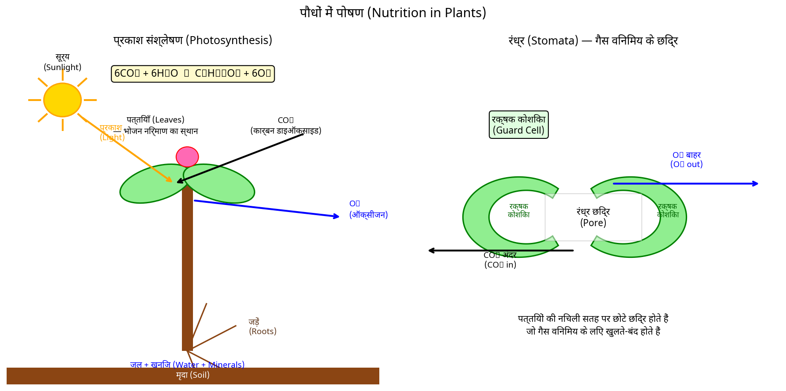
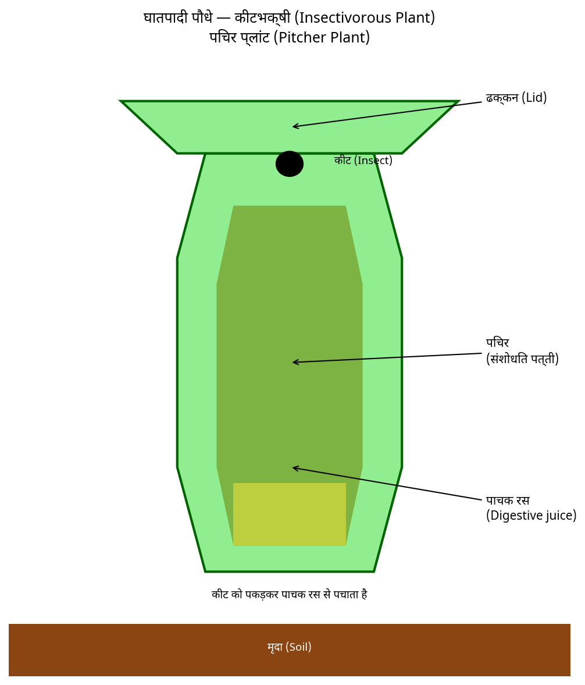
पुनरावृत्ति :→
- Q1. जीव क्यों खाना लेते हैं?
- Q2. एक परजीवी (Parasite) और एक सैप्रोट्रॉफ (Saprotrophe) के बीच अंतर बताएं?
- Q3. हरे पौधों में खाने के संश्लेषण की प्रक्रिया का संक्षिप्त विवरण दें?
गृहकार्य :-
Q1. ** रिक्त स्थान भरें :—
- a. पौधों द्वारा संश्लेषित खाना __________ के रूप में संग्रहित किया जाता है।
- b. प्रकाश संश्लेषण के दौरान पौधे __________ लेते हैं और __________ गैस निकालते हैं।
चित्र विवरण:
- प्रकाश संश्लेषण चित्र (श्यामपट्ट पर कार्य स्तंभ): ऊपर-बाएँ किरणों वाला पीला सूरज; एक हरे पत्तों और एक बड़े पीले फूल (भूरे/भूरे केंदर) वाला पौधा। "CO2 + H2O" लेबल किया गया तीर हवा से पत्ते के अंदर इंगित करता है; "O2" लेबल किया गया तीर पौधे से बाहर बाहर इंगित करता है। नीचे एक भूरे/लाल मिट्टी का खंड है जिसमें जड़ें फैली हुई हैं, "पानी" और "खनिज" लेबल किए गए हैं।
- स्टोमेटा चित्र: दो हरे गुर्दे/बीन-आकार की गार्ड कोशिकाएं एक-दूसरे के बगल में खींची गई हैं — बाएँ एक खुला (छिद्र/अंतराल दिखा रहा) और दाएँ एक बंद — उनके ऊपर "CO2" लेबल किया गया है।
- पिचर पौधा चित्र: एक हरा पिचर-आकार का संशोधित पत्ता जिसके ऊपर एक ढक्कन/खुलाव है, एक कीड़ा किनारे पर खींचा गया है, "कीटाहारी पिचर पौधा" लेबल किया गया है।
पाठ योजना 5 — पाचन तंत्र
पाठ- योजना 5
हेडर जानकारी
| नाम: निहारिका | दिनांक: 27/9/24 |
| विद्यालय: सरस्वती बाल विद्या | अवधि: 30-40 मिनट |
| विषय: विज्ञान | पीरियड: IV |
| पाठ्यविषय: पाचन प्रणाली | कक्षा: VII |
| छात्रों की संख्या: 27 |
सामान्य उद्देश्य :→
- विज्ञान सीखने में छात्रों में रुचि विकसित करना।
- कल्पना एवं अवलोकन की क्षमता विकसित करना।
- उन्हें पाठ की ज्ञान सामग्री प्राप्त करने में सक्षम बनाना।
विशिष्ट उद्देश्य :→
- छात्रों को शरीर में भोजन कैसे यात्रा करता है, इसके बारे में जानने में सक्षम बनाना।
- छात्र पाचन प्रणाली के विभिन्न घटकों के बारे में जानेंगे।
- छात्र अमीबा में पोषण एवं पाचन के बारे में जानने में सक्षम होंगे।
- छात्र मनुष्य में पाचन प्रणाली के बारे में जानने में सक्षम होंगे।
पूर्व ज्ञान :→ छात्रों को कम से कम प्रकाश संश्लेषण (Photosynthesis) की प्रक्रिया, पोषण के प्रकार, भोजन की आवश्यकता आदि के बारे में आम तौर पर परिचित होना चाहिए।
शिक्षण सहायक सामग्री :→ श्यामपट्ट, मार्कर, मॉडल, चार्ट, खड़ी, डस्टर, पॉइंटर आदि।
प्रस्तावना :→
| क्र. सं. | शिक्षक का प्रश्न | छात्र का उत्तर |
|---|---|---|
| 1. | पौधे अपना भोजन कैसे तैयार करते हैं? | प्रकाश संश्लेषण (Photosynthesis) से |
| 2. | क्या पशु अपना भोजन स्वयं तैयार कर सकते हैं? | नहीं, उन्हें पौधों पर निर्भर रहना पड़ता है। |
| 3. | जीवित प्राणियों को भोजन क्यों चाहिए? | शरीर के विकास, मरम्मत और कार्य के लिए भोजन। |
| 4. | भोजन शरीर में कैसे परिवहित होता है? | समस्याग्रस्त प्रश्न। |
विषय का कथन :→ अब, शिक्षक आज का विषय घोषित करेंगे, हम पाचन प्रणाली (Digestive System) के बारे में पढ़ेंगे।
प्रस्तुतीकरण :→
| शिक्षण बिंदु | शिक्षक की क्रिया | छात्र की क्रिया | श्यामपट्ट पर कार्य |
|---|---|---|---|
| पाचन (Digestion) | भोजन के घटक जैसे कार्बोहाइड्रेट जटिल कार्बोहाइड्रेट होते हैं। भोजन के जटिल घटकों के सरल पदार्थों में टूटने की प्रक्रिया को पाचन कहते हैं। | छात्र विषय के बारे में जानने में सक्षम होते हैं। | विषय: पाचन प्रणाली |
| मनुष्य में पाचन | हम मुँह से भोजन लेते हैं, इसे पाचित करते हैं और उपयोग करते हैं। नलिका को विभिन्न घटकों में इस प्रकार विभाजित किया जा सकता है :— 1. बुखार गुहा | सिखाई गई अवधारणा को समझना | वर्गीकरण → • बुखार गुहा • ग्रासनली • छोटी आंत • बड़ी आंत • गुदा • गुदाद्वार (टिप्पणी: यह श्यामपट्ट कार्य पृष्ठ पर चिपकाए गए नीले/हाइलाइट किए गए रंग के पेपर पर लिखा है) |
पाठ योजना (जारी पृष्ठ)
प्रस्तुतीकरण तालिका
| शिक्षण बिंदु | शिक्षक की क्रिया | छात्र की क्रिया | श्यामपट्ट पर कार्य |
|---|---|---|---|
| 2. भोजन नली या ग्रासनली 3. पेट 4. छोटी आंत 5. बड़ी आंत जो गुदा में समाप्त होती है और 6. गुदाद्वार — ये भाग मिलकर आहार नली (पाचन नाल) बनाते हैं | |||
| मुँह और बुखार गुहा | भोजन को मुँह से शरीर में लिया जाता है। भोजन को शरीर में लेने की प्रक्रिया को ग्रहण (Ingestion) कहते हैं। हमारे मुँह में लार ग्रंथि होती है जो लार (Saliva) स्रावित करती है। लार स्टार्च को शर्कराओं में तोड़ता है। | सिखाई गई विषय को समझने की कोशिश करें | |
| ग्रासनली (Oesophagus) | निगला गया भोजन भोजन नली या ग्रासनली में गुजरता है। भोजन नली गले और छाती के साथ चलती है। | कृपया इसे फिर से समझाएं | |
| पेट और छोटी आंत | छोटी आंत अत्यधिक मुड़ी हुई है और लगभग 7.5 मीटर लंबी है। यकृत (Liver) सबसे बड़ी ग्रंथि है। यह पित्त रस (Bile juice) स्रावित करता है जो एक थैली में संग्रहित होता है जिसे पित्ताशय (Gall bladder) कहते हैं। पित्त एक महत्वपूर्ण भूमिका निभाता है | नोटबुक में लिखा गया | (लाल मार्जिन चिह्न: "Run"?) |
| शिक्षण बिंदु | शिक्षक की क्रिया | छात्र की क्रिया | श्यामपट्ट पर कार्य |
|---|---|---|---|
| बड़ी आंत | बड़ी आंत छोटी आंत से चौड़ी और छोटी है। यह लगभग 1.5 मीटर लंबी है। मल पदार्थ को समय-समय पर गुदाद्वार से निकाला जाता है, इसे मलाशन (Egestion) कहते हैं। | ध्यान से देखा और इसे नोट किया | (चित्र: बड़ी आंत — लेबल: "बड़ी आंत", "होम... (होम?), "गुदा", "गुदाद्वार") |
| घास खाने वाले जानवरों में पाचन | वे जल्दी से घास को निगल लेते हैं और इसे पेट के एक भाग में संग्रहित करते हैं जिसे रूमन (Rumen) कहते हैं। यहाँ भोजन का आंशिक पाचन होता है और इसे कड़ (Cud) कहते हैं। इस प्रक्रिया को पुनर्जीवन (Rumination) कहते हैं और ये जानवर पुनर्जीवन करने वाले (Ruminants) कहलाते हैं। | (लामिन में लाखी रेखाएँ) | |
| अमीबा में पोषण एवं पाचन | अमीबा (Amoeba) एक सूक्ष्मदर्शी एकल-कोशिकीय जीव है जो तालाब के पानी में पाया जाता है। इसका भोजन एक भोजन वैक्यूल (Food vacuole) में फंस जाता है और इसमें उंगली के आकार के प्रक्षेपण होते हैं जिन्हें छद्मांग (Pseudopodia) कहते हैं। | (चित्र: अमीबा पोषण — लेबल: "अमीबा", "शिकारी", "छद्मांग", "भोजन वैक्यूल", "पाचित" — अमीबा को छद्मांग के साथ शिकारी को ग्रसन करते हुए, फिर भोजन वैक्यूल निर्माण, फिर पाचित कोशिका दिखाते हुए) |
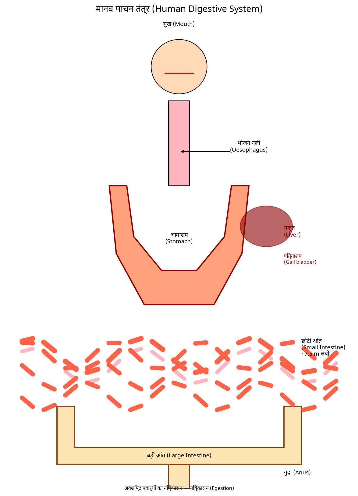
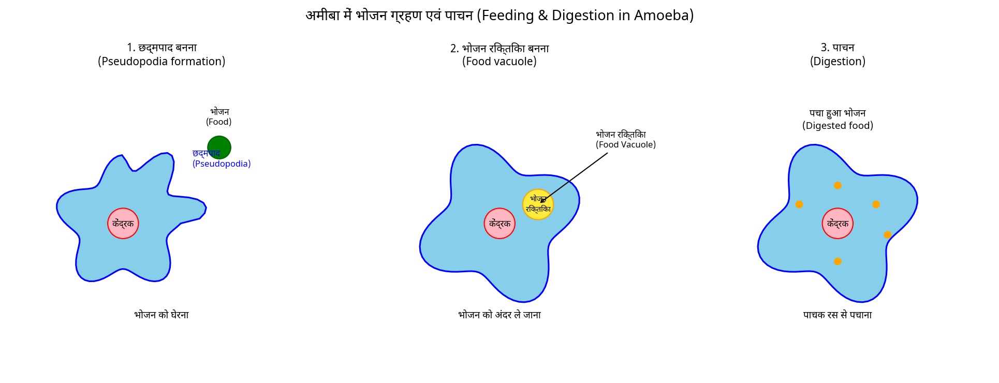
पुनरावृत्ति :-
- प्रश्न 1. विली (Villi) क्या हैं? उनका स्थान और कार्य क्या है?
- प्रश्न 2. हमें ग्लूकोज से तुरंत ऊर्जा क्यों मिलती है?
- प्रश्न 3. पित्त कहाँ उत्पन्न होता है?
गृहकार्य :-
- प्रश्न 1. समझाएं कि पाचन क्या है?
- प्रश्न 2. अमीबा के पोषण के चरण क्या हैं?
- प्रश्न 3. घास खाने वाले जानवरों के पाचन की प्रक्रिया का चर्चा करें?
पाठ योजना 6 — मानव नेत्र
पाठ योजना - 6
हेडर जानकारी
| क्षेत्र | विवरण |
|---|---|
| नाम | निधानिका |
| तारीख | 30/9/23 |
| विद्यालय | सरस्वती बाल विद्या |
| अवधि | 30-40 मिनट |
| विषय | विज्ञान |
| पीरियड | IV |
| **पाठ्यविषय | मानव आँख |
| कक्षा | 8वीं |
| छात्रों की संख्या | 27 |
सामान्य उद्देश्य →
- विज्ञान सीखने में छात्रों में रुचि विकसित करना।
- कल्पना, तर्क और व्याख्या की क्षमताओं का विकास करना।
- छात्रों में वैज्ञानिक दृष्टिकोण और रुचि विकसित करना।
- उन्हें पाठ में ज्ञान सामग्री प्राप्त करने में सक्षम बनाना।
विशिष्ट उद्देश्य →
- विकरण (dispersion) पद के बारे में समझना।
- छात्र मानव आँख के भागों के बारे में जान पाएंगे।
- छात्र मानव आँख की सीमा के बारे में जान पाएंगे।
- अंधे व्यक्ति के लिए ब्रेल प्रणाली (Braille system) के बारे में और यह समझना कि अंधे लोग कैसे पढ़ते और समझते हैं, जान पाएंगे।
पूर्व ज्ञान →
छात्रों को कम से कम सूर्य के प्रकाश, प्रकाश के रंग, प्रकाश का परावर्तन (reflection of light) आदि के बारे में सामान्य परिचय होना चाहिए।
शिक्षण सहायक सामग्री →
सफेद बोर्ड, मार्कर, मॉडल, चार्ट, खड़ी, डस्टर, पॉइंटर आदि।
प्रस्तावना →
दायाँ पृष्ठ
प्रस्तावना (प्रश्न और उत्तर)
| क्र. सं. | शिक्षक का प्रश्न | छात्र का उत्तर |
|---|---|---|
| Q1. | आँख में कौन सा रंग का प्रकाश होता है? | सफेद |
| Q2. | आप किस अंग से वस्तुओं को देख पाते हैं? | आँख — मानव आँख प्रकाश का उपयोग करती है और हमें हमारे आसपास की वस्तुओं को देखने में सक्षम बनाती है। |
| Q3. | हम वस्तुओं को कैसे देख पाते हैं? | कोई प्रतिक्रिया नहीं |
| Q4. | कॉर्निया (cornea) क्या है? | — |
| Q5. | मानव आँख क्या है? | समस्याग्रस्त प्रश्न |
विषय का कथन →
अब, शिक्षक विषय की घोषणा करेंगे, आज हम "मानव आँख" (Human Eye) के बारे में पढ़ेंगे।
प्रस्तुतीकरण →
| शिक्षण बिंदु | शिक्षक की क्रिया | छात्र की क्रिया | श्यामपट्ट पर कार्य |
|---|---|---|---|
| प्रस्तावना | आँख हमारे एक महत्वपूर्ण इंद्रिय अंगों में से एक है। आँख का आकार लगभग गोलाकार होता है। आँख का बाहरी कवच सफेद होता है। यह मजबूत होता है ताकि यह दुर्घटनाओं से आँख के आंतरिक भाग की रक्षा कर सके। | छात्र विषय के बारे में जान पाते हैं | विषय: मानव आँख |
| विकरण (Dispersion) | दर्पण और दीवार एक प्रिज्म से बनते हैं। यह प्रकाश को उसके रंगों में विभाजित करता है, प्रकाश के रंगों में विभाजन को प्रकाश का विकरण (dispersion of light) के रूप में जाना जाता है। इंद्रधनुष (Rainbow) एक प्राकृतिक घटना है। | अवधारणा को समझना। प्रकाश | — |
B.Ed विज्ञान/जीव विज्ञान पाठ योजना (पृष्ठ — प्रस्तुतीकरण तालिका का जारी, पुनरावृत्ति, गृहकार्य)
प्रस्तुतीकरण (जारी)
| शिक्षण बिंदु | शिक्षक की क्रिया | छात्र की क्रिया | श्यामपट्ट पर कार्य |
|---|---|---|---|
| आँख के भाग | आँख का पारदर्शी अगला भाग कॉर्निया (cornea) कहलाता है। कॉर्निया के पीछे, हमें एक गहरा मांसपेशी संरचना मिलती है जिसे आइरिस (iris) कहा जाता है। आइरिस में एक छोटा खुला मुहाना होता है जिसे पुपिल (pupil) कहा जाता है। लेंस (lens) प्रकाश को आँख के पीछे एक परत पर फोकस करता है जिसे रेटिना (retina) कहा जाता है। (i) कोन (Cones) → चमकीले रंगों का अनुभव (ii) रॉड (Rods) → कम प्रकाश के प्रति संवेदनशील। कोन और रंग | उपचारित विषय को समझने की कोशिश करें | — |
| आँख की सीमा | आँख एक इतना अद्भुत उपकरण है कि यह दूर की वस्तुओं को स्पष्ट रूप से देख सकती है और निकट की वस्तुओं को भी। कभी-कभी, विशेष रूप से बुढ़ापे में, दृष्टि धुंधली हो जाती है। यह आँख के लेंस के धुंधले होने के कारण होता है। | — | — |
| आँखों की देखभाल | यह आवश्यक है कि आप अपनी आँखों की उचित देखभाल करें — • यदि सलाह दी गई हो, तो उपयुक्त चश्मे का उपयोग करें • बहुत कम या बहुत अधिक प्रकाश आँखों के लिए बुरा है। • अपर्याप्त प्रकाश आँखों की थकान और सिरदर्द का कारण बनता है। • सूर्य या शक्तिशाली प्रकाश को सीधे न देखें। • हमेशा दृष्टि के लिए सामान्य दूरी पर पढ़ें। | अपनी नोटबुक में लिखें | — |
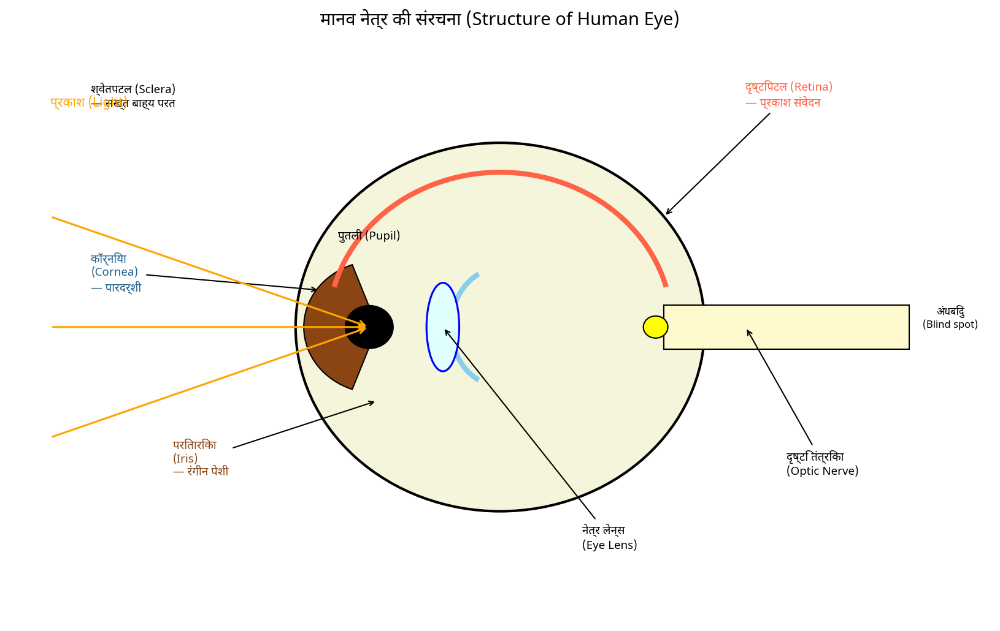
पुनरावृत्ति :→
Q1. मानव आँख का एक लेबल वाला चित्र बनाएं।
Q2. समझाएं कि आप अपनी आँखों की देखभाल कैसे कर सकते हैं?
Q3. कैटरैक्ट (cataract) क्या है।
Q4. कॉर्निया (cornea) क्या है।
Q5. आँख में मौजूद दो प्रकार के कोशिकाओं के नाम बताएं।
गृहकार्य :→
Q1. ब्रेल प्रणाली (Braille system) क्या है।
Q2. एक सामान्य आँख द्वारा पढ़ने के लिए न्यूनतम दूरी क्या है?
Q3. आइरिस (iris) का क्या कार्य है?
Q4. अंधा धब्बा (blind spot) क्या है?
पाठ योजना 7 — सौर मंडल
पाठ योजना - 7
नाम: निहारिका तारीख: 4/9/24 विद्यालय: सरस्वती बाल विद्या अवधि: 30-40 मिनट विषय: विज्ञान पीरियड: III पाठ्यविषय: सौर मंडल कक्षा: VIII छात्रों की संख्या: 27
सामान्य उद्देश्य :→
- विज्ञान सीखने में छात्रों में रुचि विकसित करना।
- कल्पना, सुनने आदि की क्षमताओं का विकास करना।
- छात्रों में वैज्ञानिक दृष्टिकोण और रुचि विकसित करना।
- उन्हें पाठ में ज्ञान सामग्री प्राप्त करने में सक्षम बनाना।
विशिष्ट उद्देश्य :→
- छात्र खगोलीय पिंडों के बारे में जान सकते हैं।
- छात्र सौर मंडल के बारे में जान सकते हैं।
- छात्र पृथ्वी, चंद्रमा और विभिन्न ग्रहों के बारे में जान सकते हैं।
- छात्र कृत्रिम उपग्रह के बारे में समझेंगे।
पूर्व ज्ञान :→ छात्रों को चंद्रमा के चरण, तारे, ब्रह्मांड, पृथ्वी आदि के बारे में कम से कम सामान्य परिचय होना चाहिए।
शिक्षण सहायक सामग्री :→ श्वेत बोर्ड (White board), मार्कर, मॉडल, खड़ी, खड़ी, डस्टर, पॉइंटर आदि।
प्रस्तावना :→
| क्र. सं. | शिक्षक का प्रश्न | छात्र का उत्तर |
|---|---|---|
| 1. | क्या आपने आकाश में चमकती चमकती बिंदुओं को देखा है? | हाँ |
| 2. | इन बिंदुओं को क्या कहा जाता है? | तारे |
| 3. | आप आकाश में और क्या देखते हैं? | चंद्रमा, सूर्य, ग्रह आदि |
| 4. | आप किस ग्रह पर रहते हैं? | पृथ्वी |
विषय का कथन :→ अब, शिक्षक विषय की घोषणा करेंगे, हम "सौर मंडल" के बारे में पढ़ेंगे।
प्रस्तुतीकरण :→
| शिक्षण बिंदु | शिक्षक की क्रिया | छात्र की क्रिया | श्यामपट्ट पर कार्य |
|---|---|---|---|
| खगोलीय पिंड | आकाश में तारे, ग्रह, चंद्रमा और कई अन्य वस्तुओं को खगोलीय वस्तुएं कहा जाता है। खगोलीय वस्तुओं और संबंधित घटनाओं का अध्ययन खगोल विज्ञान कहलाता है। | छात्र विषय के बारे में जान सकते हैं। | विषय: सौर मंडल |
| सौर मंडल | सूर्य और उसके चारों ओर घूमने वाले खगोलीय पिंड सौर मंडल बनाते हैं। सूर्य से दूरी के क्रम में आठ ग्रह हैं - बुध, शुक्र, पृथ्वी, मंगल, बृहस्पति, शनि, अरुण और वरुण। | पढ़े गए विषय को समझना |
बी.एड विज्ञान/जीव विज्ञान पाठ योजना (पृष्ठ — सौर मंडल)
प्रस्तुतीकरण तालिका (जारी)
| शिक्षण बिंदु | शिक्षक की क्रिया | छात्र की क्रिया | श्यामपट्ट पर कार्य |
|---|---|---|---|
| सूर्य | सूर्य हमारे लिए सबसे नजदीकी तारा है। यह लगातार विशाल मात्रा में गर्मी और प्रकाश उत्सर्जित कर रहा है। | विषय को समझने की कोशिश करें | [चित्र: सूर्य का हाथ से बना चित्र — एक बड़ा पीले रंग का वृत्त, जिसके अंदर बिंदुदार बनावट है, जिसके चारों ओर काले स्याही से बने रेखाएं बाहर की ओर फैली हुई हैं।] |
| ग्रह | एक ग्रह के पास सूर्य के चारों ओर घूमने का निश्चित पथ होता है। इस पथ को कक्ष कहा जाता है। किसी भी खगोलीय पिंड जो किसी अन्य खगोलीय पिंड के चारों ओर घूमता है, उसे उपग्रह कहा जाता है। | ||
| बुध (Mercury) | ग्रह बुध सूर्य के सबसे नजदीक है। यह हमारे सौर मंडल का सबसे छोटा ग्रह है। यह पृथ्वी के बहुत करीब है। | अपने नोटबुक में लिखें | (पृष्ठ पर नीले कागज की पट्टी चिपकाई गई है, सफेद में हस्तलिखित:) "बुध सूर्य के नजदीक है" |
| शुक्र (Venus) | दिन का या शाम का तारा के रूप में भी जाना जाता है। — पृथ्वी का सबसे नजदीकी ग्रह और रात के आकाश में सबसे चमकीला ग्रह। | ध्यान से सुन रहे हैं | (पृष्ठ पर नीले कागज की पट्टी चिपकाई गई है, सफेद में हस्तलिखित:) "सौर मंडल का सबसे बड़ा ग्रह" |
| पृथ्वी (The earth) | पृथ्वी सौर मंडल में एकमात्र ग्रह है जिस पर जीवन का अस्तित्व ज्ञात है। | अपने नोटबुक में लिखें | |
| निष्कर्ष | धूमकेतु सूर्य के चारों ओर अत्यधिक दीर्घवृत्ताकार कक्ष में घूमते हैं। धूमकेतु का पूंछ हमेशा सूर्य से दूर की ओर दिखाई देती है। |
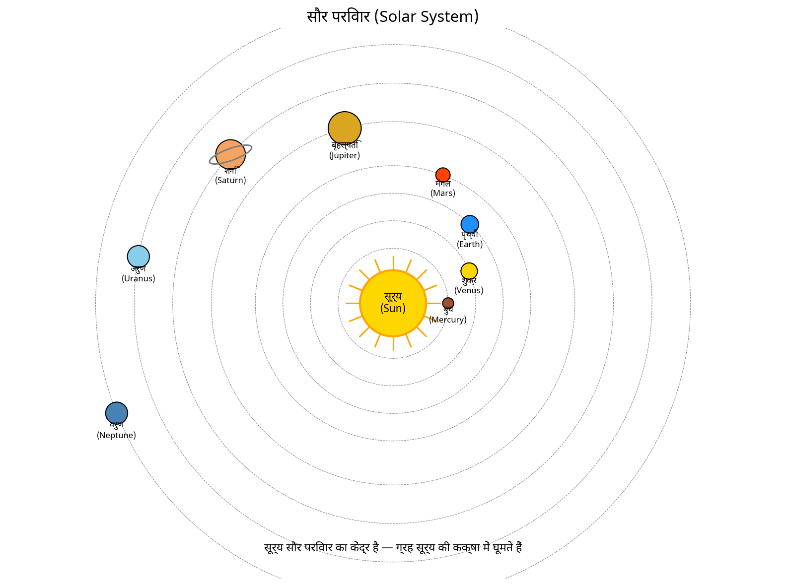
पुनरावृत्ति :-
प्रश्न 1. सौर मंडल का सबसे बड़ा ग्रह का नाम बताएं?
प्रश्न 2. एक तारामंडल क्या है? किन्हीं दो तारामंडलों के नाम बताएं।
प्रश्न 3. क्या आकाश के सभी तारे चलते हैं? समझाएं।
प्रश्न 4. ग्रहों के अलावा सौर मंडल के सदस्य के रूप में किन्हीं दो वस्तुओं के नाम बताएं?
अथवा
गृहकार्य :-
प्रश्न 1. सही विकल्प पर चिह्न लगाएं :
(1) निम्नलिखित में से कौन सौर मंडल का सदस्य नहीं है?
- (a) एक ग्रहाणु (c) एक तारामंडल
- (b) एक उपग्रह (d) एक धूमकेतु
(2) निम्नलिखित में से कौन सूर्य का एक ग्रह नहीं है?
- (a) सिरियस (c) शनि
- (b) बुध (d) पृथ्वी
- सूर्य चित्र (श्यामपट्ट पर कार्य स्तंभ): एक पीले रंग से रंगा वृत्त, जिसके अंदर सूर्य की सतह का प्रतिनिधित्व करने वाले छोटे बिंदु, जिसके चारों ओर सभी दिशाओं में बाहर की ओर निकली हुई छोटी सीधी किरणें, गहरे स्याही से बनी हैं।
- दो नीले आयताकार कागज के टुकड़े श्यामपट्ट पर कार्य स्तंभ में चिपकाए गए हैं, जिनमें क्रमशः सफेद में हस्तलिखिट है: "बुध सूर्य के नजदीक है" और "सौर मंडल का सबसे बड़ा ग्रह"।
पाठ योजना 8 — संतुलित आहार
पाठ योजना - 8
हेडर जानकारी
| क्षेत्र | विवरण |
|---|---|
| नाम | निहारिका |
| तारीख | 2/2/23 |
| विद्यालय | एम.एल. मानियारिया बाल विद्या। |
| अवधि | 30–40 मिनट |
| विषय | विज्ञान |
| पीरियड | 5वीं |
| पाठ्यविषय | संतुलित आहार |
| कक्षा | V |
| छात्रों की संख्या | 27 |
सामान्य उद्देश्य →
- विद्यार्थियों में विज्ञान सीखने की रुचि विकसित करना।
- कल्पना, तर्क और अवलोकन की क्षमताओं को विकसित करना।
- विद्यार्थियों में वैज्ञानिक दृष्टिकोण और रुचि विकसित करना।
- उन्हें पाठ में ज्ञान सामग्री प्राप्त करने में सक्षम बनाना।
विशिष्ट उद्देश्य →
- विद्यार्थी को आहार के बारे में जागरूक होना चाहिए।
- विद्यार्थी को यह ज्ञान होना चाहिए कि वे क्या खाएं ताकि वे मजबूत और स्वस्थ बन सकें।
- विद्यार्थी विटामिन और खनिजों के बारे में जानकारी प्राप्त करें।
- विद्यार्थी को खाद्य पदार्थों में मौजूद विभिन्न पोषक तत्वों के बारे में ज्ञान होना चाहिए।
पूर्व ज्ञान →
खाद्य पदार्थ हमारे जीवन के लिए आवश्यक हैं और जीवित रहने की बुनियादी जरूरत हैं। खाद्य पदार्थों का प्राथमिक स्रोत पौधे, जानवर आदि हैं।
शिक्षण सहायक सामग्री →
कुर्सियां, खड़ी, डस्टर, रंग, श्यामपट्ट आदि।
प्रस्तावना →
तालिका: प्रश्न संख्या | शिक्षक का प्रश्न | छात्र का उत्तर
| प्रश्न संख्या। | शिक्षक का प्रश्न | छात्र का उत्तर |
|---|---|---|
| 1. | क्या जंक फूड स्वस्थ है? | नहीं |
| 2. | आप उन्हें क्यों खाते हैं? | वे स्वादिष्ट हैं |
| 3. | छात्र मुझसे बताएं, आपका कौन सा पसंदीदा खाद्य पदार्थ है? | सैंडविच, पिज्जा, बर्गर, समोसा आदि |
| 4. | क्यों जंक फूड स्वस्थ नहीं हैं | वे पोषक तत्व प्रदान नहीं करते |
विषय का कथन |
अतः, छात्रों आज हम "संतुलित आहार" के बारे में पढ़ेंगे।
प्रस्तुतीकरण →
तालिका: क्रम संख्या | शिक्षक की क्रिया | छात्र की क्रिया | श्यामपट्ट पर कार्य
| क्रम संख्या। | शिक्षक की क्रिया | छात्र की क्रिया | श्यामपट्ट पर कार्य |
|---|---|---|---|
| 1. | हम आमतौर पर एक दिन में जो खाना खाते हैं वह हमारा आहार है। विकास और अच्छे स्वास्थ्य की रखरखाव के लिए, हमारा आहार में हमारे शरीर को चाहिए वे सभी पोषक तत्व होने चाहिए जो हमारे शरीर को चाहिए, संतुलित आहार में सही मात्रा में। | विषय को समझने की कोशिश करें | विषय : संतुलित आहार — पाई चार्ट आरेख (नीचे देखें) |
| 2. | किसी एक का बहुत अधिक और दूसरे का बहुत कम नहीं। संतुलित आहार में भूसी (roughage) और पानी की भी अच्छी मात्रा होती है। | ध्यान से सुन रहे हैं | — |
| 3. | सही प्रकार का खाना खाना पर्याप्त नहीं है। इसे भी ऐसे | छात्र नोट लेंगे | — |
आरेख विवरण (श्यामपट्ट पर कार्य – बिंदु 1)
एक पाई चार्ट (वृत्त जो रंगीन क्षेत्रों में विभाजित है) जो संतुलित आहार के घटकों को दर्शाता है, लिखे हुए शीर्षक "विषय : संतुलित आहार" के निकट बनाया गया है। लेबल किए गए क्षेत्र हैं:
- फाइबर्स (Fibres) (हरा क्षेत्र, ऊपरी दाएं)
- प्रोटीन्स (Proteins) (नीला क्षेत्र, निचला दाएं)
- फैट्स (Fats) (गुलाबी/लाल क्षेत्र, नीचे)
- कार्बोहाइड्रेट्स (Carbohydrates) (लेबल किया गया "Carbo...", पीला/सफेद क्षेत्र, बाएं ओर)
चार्ट के पास लाल एनोटेशन/चिह्न भी है (यह शायद शिक्षक का मूल्यांकन दर्शाता है, "132" लाल में, जो मूल्यांकन को दर्शाता है)।
प्रस्तुतीकरण (जारी) — शेष Q&A
...उचित रूप से पकाया जाना चाहिए ताकि उसके पोषक तत्व नष्ट न हों | नोटबुक में
| # | प्रश्न/कथन | छात्र का उत्तर |
|---|---|---|
| 4. | क्या आप जानते हैं कि कुछ पोषक तत्व पकाने और तैयार करने की प्रक्रिया में खो जाते हैं? | नहीं मैडम |
| 5. | यदि सब्जियां और फलों को काटने या छीलने के बाद धोया जाए तो इससे कुविटामिन्स के कुछ पोषक तत्वों का नुकसान हो सकता है | धन्यवाद मैडम। |
| 6. | कई सब्जियों की छिलके और फलों में विटामिन और खनिज पदार्थ होते हैं। इसी तरह, चावल और दालों का बार-बार धोना उनमें मौजूद कुछ विटामिन और खनिज पदार्थों को दूर कर सकता है | अपनी नोटबुक में लिख लिया गया |
चित्र विवरण: एक हाथ से बनाया गया, रंगीन चित्र जिसका लेबल "सब्जियां" है, जिसमें पत्तेदार हरी सब्जियां (सलाद/पत्तागोभी जैसे पत्ते), हरा कद्दू, भूरे आलू, एक लाल टमाटर, एक सफेद फूलगोभी, और नीचे हरे कच्चे ककड़ी के टुकड़े/मटर दिखाए गए हैं।
पुनरावृत्ति :→
- Q1. संतुलित आहार क्या है?
- Q2. पोषक तत्व क्या हैं?
- Q3. विटामिन्स कितने प्रकार के होते हैं?
गृहकार्य :→
- Q1. हम कैसे उचित संतुलित आहाप्राप्त करते हैं?
- Q2. खनिज पदार्थ क्या हैं?
- Q3. नींबू में किस प्रकार के विटामिन्स पाए जाते हैं?
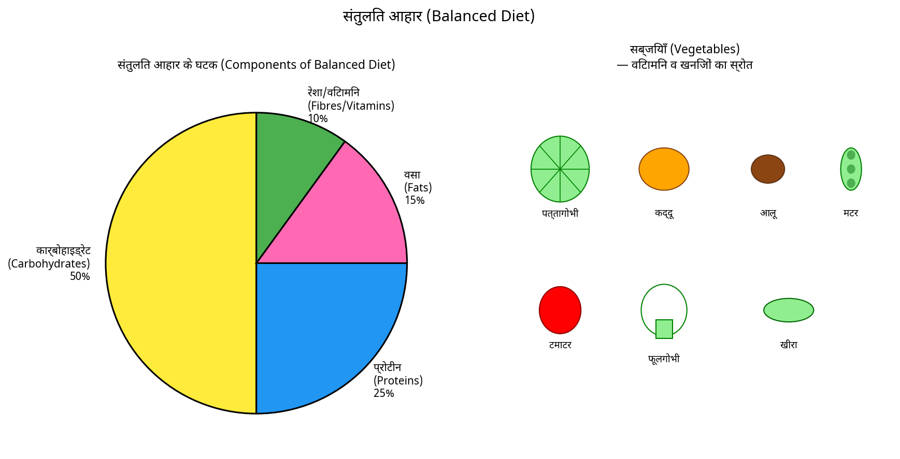
पाठ योजना 9 — कोशिकाओं का संगठन
पाठ योजना — 9
| क्षेत्र | प्रविष्टि | क्षेत्र | प्रविष्टि |
|---|---|---|---|
| नाम: | निहारिका | तिथि: | 2/10/22 |
| विद्यालय: | अवधि: | 35-40 मिनट | |
| विषय: | विज्ञान | पीरियड: | 2nd |
| पाठ्यविषय: | कोशिकाओं का संगठन (Organization of Cells) | कक्षा: | 10th |
| छात्रों की संख्या: | 40 |
सामान्य उद्देश्य :→
- विज्ञान सीखने में छात्रों में रुचि विकसित करना।
- कल्पना, तर्क आदि की क्षमताओं को विकसित करना।
- छात्र में वैज्ञानिक दृष्टिकोण और रुचि विकसित करना।
- उन्हें पाठ में ज्ञान सामग्री प्राप्त करने में सक्षम बनाना।
विशिष्ट उद्देश्य :→
- छात्रों को यह सिखाना कि एक कोशिका कैसे संगठित होती है।
- छात्रों को प्लाज्मा झिल्ली (plasma membrane), केन्द्रक (nucleus) और साइटोप्लाज्म (cytoplasm) के बारे में जानने में सक्षम बनाना।
- छात्रों को परासरण (osmosis) के बारे में सीखने में सक्षम बनाना।
- छात्रों को यह सीखने में सक्षम बनाना कि यदि हम एक प्राणी कोशिका या एक पादप कोशिका को चीनी के घोल (solution) में रखें तो क्या होगा।
पूर्व ज्ञान :→
छात्रों को कम से कम कोशिकाओं, इसके संस्थापकों (founders), संरचना आदि के साथ सामान्य परिचय होना चाहिए।
शिक्षण सहायक सामग्री :→
डेलाइट HCL, शुद्ध पानी, चॉक क्लस्टर, पॉइंटर, श्यामपट्ट आदि।
प्रस्तावना :→
B.Ed विज्ञान/जीव विज्ञान पाठ योजना — निकाला गया पाठ
बाएँ स्तंभ (तालिका — शिक्षकों के प्रश्न / छात्रों के उत्तर / टिप्पणियां)
| S.No. | शिक्षक का प्रश्न | छात्र का उत्तर | टिप्पणियां |
|---|---|---|---|
| 1. | आप कोशिका के बारे में क्या जानते हैं? — यह जीवन की संरचनात्मक और कार्यात्मक इकाई है। | 8. इस प्रकार, अधिक घनत्व वाले क्षेत्र से कम घनत्व वाले क्षेत्र में एक अर्ध-पारगम्य झिल्ली के माध्यम से पानी के कणों के गुजरने की प्रक्रिया एक कम पानी की सामग्री वाले क्षेत्र है। | |
| 2. | कोशिका की खोज किसने की? — रॉबर्ट हुक (1665)। | ||
| 3. | आप कोशिका के बारे में क्या जानते हैं? — एक विशेष कोशिकीय भाग जो एक अंग के समान है। | ||
| 4. | कोशिका किससे बनी है? — एनालॉग क्या है? — | 4. शिक्षक बताएंगे कि साइटोप्लाज्म केन्द्रक के बाहर और कोशिका झिल्ली के अंदर बंधे सभी सामग्री से बना होता है। | |
| 5. | कोशिका की संरचनात्मक संगठन क्या है? | इसमें साइटोप्लाज्म और यूकेरियोटिक कोशिकाएं, जिन्हें गणितीय और अन्य में पाया जाता है — | |
| 5. केन्द्रक जो कोई झिल्ली नहीं है जिसे प्रोकेरियोट्स के बजाय कहा जाता है। |
प्रस्तुतीकरण:
| S.No. | शिक्षक की क्रिया | छात्र की क्रिया | श्यामपट्ट पर कार्य |
|---|---|---|---|
| 1. | यदि हम कोशिका को माइक्रोस्कोप के अंतर्गत अध्ययन करें, तो हमें ऑर्गेनेल्स (organelles) और लगभग हर कोशिका की अवधारणा, प्लाज्मा झिल्ली, केन्द्रक, साइटोप्लाज्म और अन्य गतिविधियां मिलेंगी और कोशिका की संरचना और इसका वातावरण इन विशेषताओं के कारण संभव है। |
पुनरावृत्ति:
- Q1. पादप और प्राणी कोशिकाओं की तुलना करें।?
- Q2. प्रोकेरियोटिक कोशिकाएं यूकेरियोटिक कोशिकाओं से कैसे भिन्न होती हैं।?
- Q3. यूकेरियोट क्या है।?
दाएँ स्तंभ (जारी)
| S.No. | शिक्षक का प्रश्न | छात्र का उत्तर | टिप्पणियां |
|---|---|---|---|
| 2. | शिक्षक बताएंगे कि हम पानी के कणों को चुनिंदा रूप से पारगम्य झिल्ली के माध्यम से धीरे-धीरे गुजरते हुए लिखने का हिस्सा बनाते हैं। | Q1. एमीबा (amoeba) अपना भोजन कैसे प्राप्त करता है।? |
Q2. यूकेरियोटिक कोशिका को परिभाषित करें।?
Q3. चुनिंदा रूप से पारगम्य झिल्ली क्या है।?
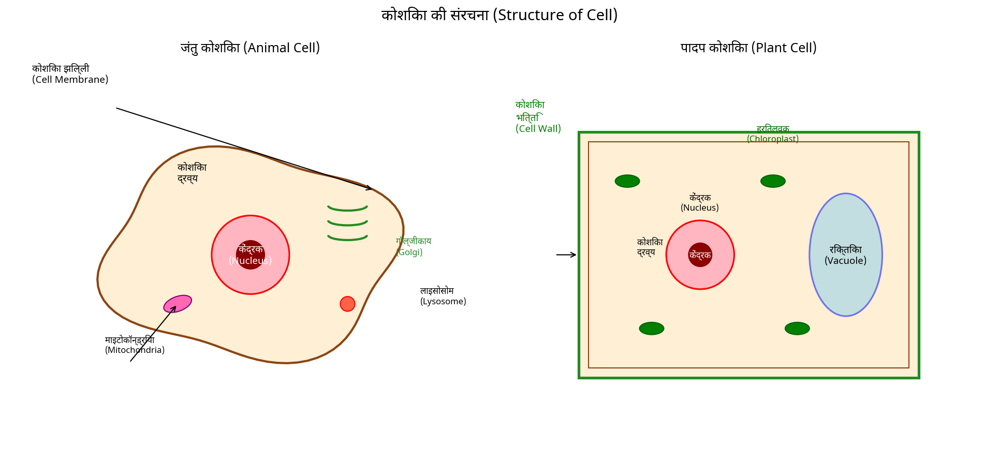
पाठ योजना 10 — ऊतक एवं इसके प्रकार
पाठ योजना - 10
| नाम: निहारिका | दिनांक: 10/08/2021 |
| विद्यालय: सरस्वती बाल विद्या, | अवधि: 35-40 मिनट |
| विषय: विज्ञान (जीव विज्ञान) | पीरियड: V |
| पाठ्यविषय: ऊतक और इसके प्रकार | कक्षा: 10वीं |
| छात्रों की संख्या: 30 |
सामान्य उद्देश्य →
- जीव विज्ञान सीखने में छात्रों में रुचि विकसित करना
- छात्रों में रचनात्मकता अंतर्निहित करना
- कल्पना, तर्क और अवलोकन की क्षमताओं का विकास करना
- उन्हें पाठ में ज्ञान सामग्री प्राप्त करने में सक्षम बनाना
विशिष्ट उद्देश्य →
- उन्हें पौधा और जानवर ऊतक के बीच अंतर से अवगत कराना
- उन्हें विभिन्न प्रकार के ऊतकों से अवगत कराना
- छात्रों को पौधे और जानवर ऊतकों के प्रकारों के बारे में जानने में सक्षम बनाना
- उन्हें ऊतकों के निर्माण के बारे में जानने में सक्षम बनाना
पूर्व ज्ञान →
छात्र को कम से कम कोशिका (Cell), कोशिका की उत्पत्ति, कोशिका विभाजन आदि के बारे में कम से कम सामान्य परिचय होना चाहिए।
शिक्षण सहायक सामग्री →
मॉडल, चार्ट, खड़ी, डस्टर, पॉइंटर, आदि।
प्रस्तावना →
| प्रश्न संख्या | शिक्षक का प्रश्न | छात्र का उत्तर |
|---|---|---|
| 1. | हमारा शरीर किस छोटे इकाई से बना है जिसे कहा जाता है? | हमारा शरीर कोशिका से बना है |
| 2. | ऊतक क्या है? | कोशिकाओं का समूह ऊतक कहलाता है |
| 3. | क्या पौधा और जानवर के शरीर भी ऊतकों से बने हैं? | हाँ, उनके शरीर ऊतकों से बने हैं |
| 4. | क्या आप सोचते हैं कि पौधे और जानवर समान प्रकार के ऊतकों से बने हैं? | समस्याग्रस्त प्रश्न |
विषय का कथन →
अब, शिक्षक घोषित करेंगे, विषय "हम 'ऊतक और इसके प्रकार' के बारे में पढ़ेंगे"।
प्रस्तुतीकरण →
| शिक्षण बिंदु | शिक्षक की क्रिया | छात्र की क्रिया | श्यामपट्ट पर कार्य |
|---|---|---|---|
| प्रस्तावना | पौधे स्थिर या तय होते हैं — वे नहीं चलते। उनके पास ज्यादातर ऊतक सहायक होते हैं जो उन्हें संरचनात्मक शक्ति प्रदान करते हैं। इनमें से ज्यादातर ऊतक मृत होते हैं, क्योंकि मृत कोशिकाएँ जीवित कोशिकाओं की तरह यांत्रिक शक्ति प्रदान कर सकती हैं, और कम रखरखाव की आवश्यकता होती है | शिक्षक को सुनते हैं | विषय: ऊतक और इसके प्रकार |
| पौधा ऊतक और इसके प्रकार | ① गतिशील ऊतक (Meristematic tissue) → पौधों का विकास केवल निश्चित क्षेत्रों में ही होता है |
इस पृष्ठ पर कोई चित्र नहीं है।
B.Ed पाठ योजना (जारी पृष्ठ)
प्रस्तुतीकरण (जारी)
| शिक्षण बिंदु | शिक्षक की क्रिया | छात्र की क्रिया | श्यामपट्ट पर कार्य |
|---|---|---|---|
| (ii) शीर्ष ऊतक (Apical tissue) | |||
| (iii) पार्श्व ऊतक (Lateral tissue) | |||
| (iii) अंतराल ऊतक (Intercalary tissue) | |||
| स्थायी ऊतक :- वे एक विशिष्ट भूमिका अपनाते हैं और विभाजित होने की क्षमता खो देते हैं। | |||
| (i) सरल स्थायी ऊतक: (ii) जटिल स्थायी ऊतक। | |||
| जानवर ऊतक और इसके प्रकार | जब हम सांस लेते हैं तो हम वास्तव में अपनी छाती की गति महसूस कर सकते हैं। यह विशेष कोशिका के कारण होता है जिसे मांसपेशी कोशिका (muscular cells) कहा जाता है। (i) उपकला ऊतक (Epithelial tissue) (ii) संयोजी ऊतक (Connective tissue) (iii) मांसपेशी ऊतक (Muscular tissue) (iv) तंत्रिका ऊतक (Nervous tissue) | सिखाए गए विषय को समझने की कोशिश करें | (पृष्ठ पर नीले कागज का चिपकाया गया है जिसमें निम्नलिखित पाठ है:) विभिन्न प्रकार के जानवर ऊतक हैं: (i) उपकला ऊतक (Epithelial tissue) (ii) संयोजी ऊतक (Connective tissue) (iii) मांसपेशी ऊतक (Muscular tissue) (iv) तंत्रिका ऊतक (Nervous tissue) |
| संयोजी ऊतक (Connective tissue) | (i) एरोलर ऊतक (Areolar tissue) (ii) एडिपोज ऊतक (Adipose tissue) (iii) घन हड्डी ऊतक (Compact bone tissue) (iv) हायलाइन कार्टिलेज ऊतक (Hyaline cartilage tissue) (v) रक्त कोशिकाओं के प्रकार |
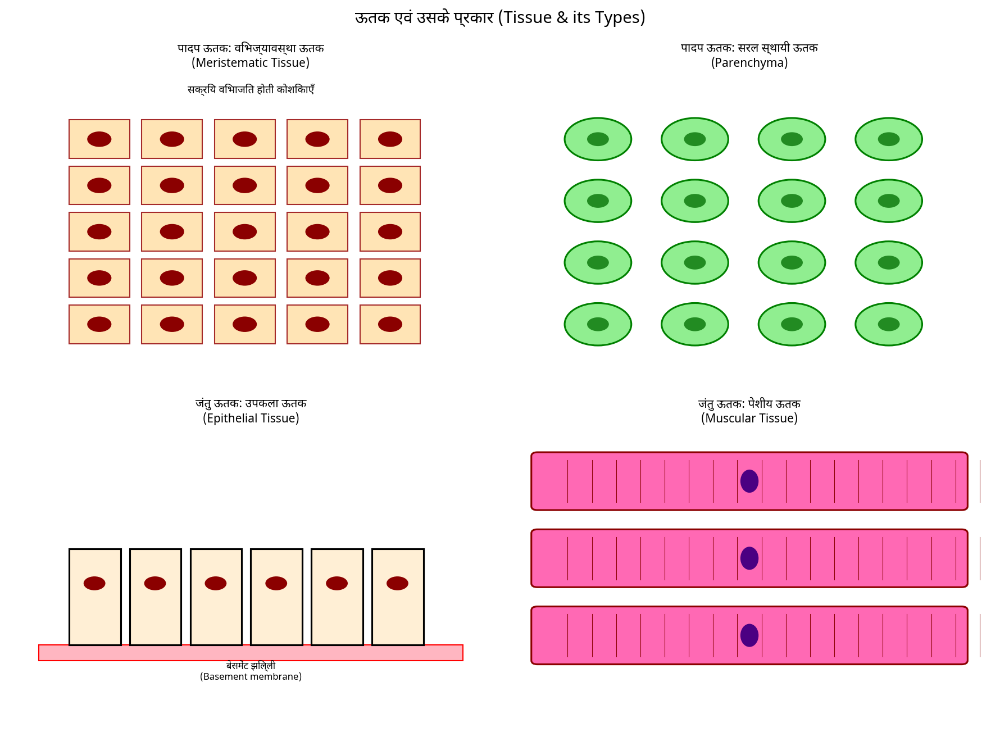
पुनरावृत्ति :→
प्रश्न 1. तंत्रिका ऊतक क्या हैं?
प्रश्न 2. उपकला ऊतक (Epithelial tissue) और इसके प्रकार की व्याख्या करें?
प्रश्न 3. पैरेंकाइमा, कोलेंकाइमा और स्क्लेरेनकाइमा के बीच अंतर बताएं?
गृहकार्य :→
प्रश्न 1. पौधा ऊतक जानवर ऊतक से कैसे भिन्न है?
प्रश्न 2. अपने प्रकारों के साथ पौधा ऊतक की व्याख्या करें?
प्रश्न 3. मांसपेशी ऊतक क्या हैं?
प्रश्न 4. तंत्रिका ऊतक का चिह्नित चित्र बनाएं?
पाठ योजना 11 — सूक्ष्मजीव
पाठ योजना-11
हेडर जानकारी
- नाम : निभौका
- तारीख : 15/07/24
- विद्यालय : सरायुष्ट बाल विद्या.
- अवधि : 35-40 मिनट
- विषय : विज्ञान
- अवधि : 2nd
- विषय : सूक्ष्मजीव (Micro organism)
- कक्षा : 8th
- छात्रों की संख्या : 40
सामान्य उद्देश्य :→
- जीव विज्ञान के प्रति छात्रों में रुचि विकसित करना।
- छात्रों को दैनिक जीवन में उपयोग किए जाने वाले वैज्ञानिक तथ्यों के बारे में जागरूक करना।
- छात्र में वैज्ञानिक दृष्टिकोण विकसित करना।
- जैविक पदार्थों और चित्रों को समझने की क्षमता विकसित करना।
विशिष्ट उद्देश्य :→
- ज्ञान → छात्र सूक्ष्मजीव (micro organism) और उनकी प्रकृति के बारे में बुनियादी ज्ञान प्राप्त कर पाएंगे।
- समझ → छात्र विभिन्न सूक्ष्मजीवों के बारे में समझ पाएंगे।
- अनुप्रयोग → छात्र अपने दैनिक जीवन में सूक्ष्मजीवों के ज्ञान को लागू कर पाएंगे।
- विश्लेषण → छात्र सूक्ष्मजीवों की संरचना का विश्लेषण कर पाएंगे।
पूर्व ज्ञान :→
छात्रों के पास सूक्ष्मजीव (micro organism) शब्द के बारे में कुछ सामान्य जानकारी है।
शिक्षण सहायक सामग्री :→
खड़ी, धूल, चार्ट, पोस्टर, चार्ट-रोल्स, श्यामपट्ट और ... (पृष्ठ के नीचे टूटा हुआ)
प्रस्तावना :→
| प्र. सं. | शिक्षक की क्रिया | छात्र की प्रतिक्रिया |
|---|---|---|
| 1. | पाने के 2-उपयोग बताएं? | पानी पीने और खाना पकाने के लिए उपयोग होता है |
| 2. | पृथ्वी को नीला ग्रह क्यों कहा जाता है? | पृथ्वी को नीला ग्रह कहा जाता है क्योंकि इसमें बहुत सारा पानी मौजूद है। |
| 3. | आप छोटे जीव को क्या कहते हैं? | सूक्ष्मजीव (Micro-organism) |
| 4. | सूक्ष्मजीव (micro-organism) क्या है? | समस्याग्रस्त प्रश्न — |
विषय का कथन :→
तो छात्रों, आज हम विषय "सूक्ष्मजीव (micro-organism)" के बारे में विस्तार से अध्ययन करेंगे।
प्रस्तुतीकरण :→
| शिक्षण क्रिया | शिक्षक की क्रिया | छात्रों की क्रिया | श्यामपट्ट पर कार्य |
|---|---|---|---|
| प्रस्तावना | एक सूक्ष्मजीव या सूक्ष्जीव (microbes) वे जीव हैं जो आकार में बहुत छोटे होते हैं, जिन्हें नंगी आँखों से नहीं देखा जा सकता है। उन्हें केवल माइक्रोस्कोप (microscope) के अंतर्गत ही देखा जा सकता है। सूक्ष्मजीव (Micro organism)। वे एककोशिकीय (unicellular), बहुकोशिकीय (multicellular) आदि हो सकते हैं। | सिखाए गए अवधारणा को समझना। | विषय : सूक्ष्मजीव (Micro-organism) |
| सूक्ष्मजीवों का आवास (Habitat of micro organism) | सूक्ष्मजीव सर्वव्यापी (omnipresent) हैं। वे सभी प्रकार के पर्यावरण में जीवित रह सकते हैं रेंग... (पाठ जारी/कटा हुआ) | ध्यानपूर्वक सुनना | (खाली/कटा हुआ) |
B.Ed विज्ञान/जीव विज्ञान पाठ योजना (हस्तलिखित) — निकाला गया पाठ
[बाएं पृष्ठ, मुख्य स्तंभ]
...बर्फीले ठंडे जलवायु से गर्म चश्में (hot springs) तक। वे पशुओं और मनुष्यों के शरीर के भीतर भी पाए जाते हैं। कुछ दूसरे जीव पर रहते हैं जबकि अन्य स्वतंत्र रूप से अस्तित्व में होते हैं। कुछ उपनिवेशों (colonies) में रहते हैं जबकि कवक (fungi) अकेले रहते हैं।
श्रेणियाँ सूक्ष्मजीवों का मूल विभाग :
- प्रोटोज़ोआ (Protozoa)
- शैवाल (Algae)
- कवक (Fungi)
- बैक्टीरिया (Bacteria)
- वायरस (Virus)
कोश सिद्धांत के आधार पर →
- एककोशिकीय (Unicellular)
- बहुकोशिकीय (Multicellular)
- अकोशिकीय (Acellular) -
मित्रवत (Friendly) सूक्ष्मजीवों का विभिन्न उद्देश्यों में उपयोग किया जाता है :
(i) दही और ब्रेड बनाना
(ii) वाणिज्यिक उपयोग (Commercial use)
(iii) औषधीय उपयोग (Medicinal use)
(iv) मिट्टी की उपजाऊ क्षमता बढ़ाना
(v) पाचन में मदद करना
(vi) सूक्ष्मजीव नाइट्रोजन फिक्स करते हैं
(vii शराब बनाना
[बाएं पृष्ठ, दाएं स्तंभ — पीले चिपकाए गए चित्र/चार्ट]
चित्र 1 (पीला कागज, हस्तलिखित):
शीर्ष लेबल: मिट्टी पानी हवा (soil water Air) इन शब्दों से नीचे की ओर तीन तीर एक अंडाकार/गोलाकार बॉक्स की ओर इंगित करते हैं जिस पर लिखा है:
> सूक्ष्मजीवों का आवास (Habitat of micro-organism)
बॉक्स से, तीन तीर नीचे/बाहर की ओर इंगित करते हैं:
- अंदर (Inside)
- अकेले (alone) (केंद्र में)
- बाहर (outside)
"अंदर" के नीचे एक और तीर "स्वतंत्र (Freely)" की ओर इंगित करता है।
[बाएं पृष्ठ, निचला दाएं स्तंभ — पीले चिपकाए गए चित्र/चार्ट]
चित्र 2 (पीला कागज, हस्तलिखित):
शीर्ष (रेखांकित): सूक्ष्मजीवों का उपयोग (Use of micro-organism)
शीर्ष पर दो लेबल: पाचन में मदद (Help in digestion) (बाएं) और सफाई एजेंट (cleaning agent) (दाएं), जिनके नीचे तीर एक अंडाकार/गोलाकार बॉक्स की ओर इंगित करते हैं जिस पर लिखा है:
> मित्रवत सूक्ष्मजीव (Friendly micro-organism)
बॉक्स से तीर बाहर की ओर इंगित करते हैं:
- शराब बनाना (Making wine) (बाएं नीचे)
- दही और ब्रेड (curd & bread) (बीच में नीचे)
- मिट्टी की उपजाऊ क्षमता बढ़ाना (Increase soil fertility) (दाएं नीचे, "Increase soil fertility" के रूप में लिखा गया)
[बाएं पृष्ठ, बाएं से दूर संकरा मार्जिन स्तंभ]
- मित्रवत (Friendly)
- सूक्ष्मजीव (micro-organism)
[दाएं पृष्ठ]
पुनरावृत्ति :→
Q1. सूक्ष्मजीव (micro-organism) क्या है?
Q2. सूक्ष्मजीवों का आवास (Habitat) लिखें?
Q3. दैनिक जीवन में सूक्ष्मजीवों के कुछ उपयोग लिखें?
गृहकार्य :→
Q1. कुछ ऐसी बीमारियों के नाम लिखें जो सूक्ष्मजीवों के कारण होती हैं
Q2. निम्नलिखित स्तंभों का मिलान करें :
| स्तंभ A | स्तंभ B |
|---|---|
| (a) सूक्ष्मजीव (Micro-organism) | मिट्टी की उपजाऊ क्षमता बढ़ाते हैं |
| (b) सूक्ष्जीव (Microbes) | सूक्ष्मजीवों के कारण होती है |
| (c) मसूरी (Measles) | पौधे |
| (d) सिट्रस कैंकर (Citrus canker) | पाचन में मदद करते हैं |
| (e) ई. कोलाई (E. coli) | माइक्रोस्कोप से दिखाई देते हैं |
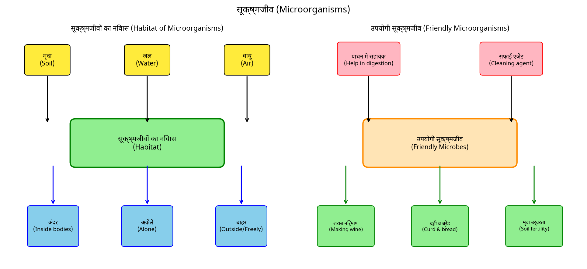
पाठ योजना 12 — मृदा
पाठ योजना - 12
नाम: निशानिका दिनांक: 17/10/21 विद्यालय: [सरकारी कन्या विद्यालय (उच्च माध्यमिक)] अवधि: 30-35 मिनट विषय: विज्ञान (जीव विज्ञान) पीरियड: 3वीं पाठ्यविषय: मिट्टी कक्षा: 7वीं छात्रों की संख्या: 40
सामान्य उद्देश्य: →
- विद्यार्थियों में विज्ञान सीखने की रुचि विकसित करना।
- कल्पना (imagination), तर्क (reasoning) आदि की क्षमताओं का विकास करना।
- विद्यार्थियों में वैज्ञानिक दृष्टिकोण और रुचि विकसित करना।
- उन्हें पाठ में दिए गए ज्ञान सामग्री को प्राप्त करने में सक्षम बनाना।
विशिष्ट उद्देश्य: →
- विद्यार्थी मिट्टी के बारे में जानेंगे।
- विद्यार्थी मिट्टी की विभिन्न परतों के बारे में ज्ञात करेंगे।
- विद्यार्थी विभिन्न प्रकार की मिट्टियों के बारे में जानेंगे।
- विद्यार्थी विभिन्न मिट्टियों में उगाई जाने वाली फसलों के बारे में जानेंगे।
पूर्व ज्ञान: →
विद्यार्थी को अपने आसपास के पर्यावरण, उनके आसपास पाई जाने वाली विभिन्न मिट्टियां, प्राकृतिक संसाधन, मानव निर्मित संसाधन, मनुष्यों का आवास (habitat) आदि के बारे में कम से कम सामान्य परिचितता होनी चाहिए।
शिक्षण सहायक सामग्री: →
श्वेत बोर्ड (White board), मार्कर, खड़िया, खड़िया, मॉडल, डस्टर, पॉइंटर, काली बोर्ड आदि।
प्रस्तावना: →
| क्र. सं. | शिक्षक का प्रश्न | छात्र का उत्तर |
|---|---|---|
| 1. | संसाधनों के कितने प्रकार हैं? | दो |
| 2. | पृथ्वी का सतह किससे बनी है? | मिट्टी |
| 3. | मिट्टी किस प्रकार का संसाधन है? | प्राकृतिक संसाधन |
| 4. | मिट्टी की विभिन्न परतों के नाम बताएं | समस्याग्रस्त प्रश्न |
विषय का कथन: → अब, शिक्षक विषय की घोषणा करेंगे, आज हम 'मिट्टी' (Soil) के बारे में पढ़ेंगे।
प्रस्तुतीकरण: →
| शिक्षण बिंदु | शिक्षक की क्रिया | छात्र की क्रिया | श्यामपट्ट पर कार्य |
|---|---|---|---|
| प्रस्तावना | मिट्टी (Soil) सबसे महत्वपूर्ण प्राकृतिक संसाधनों में से एक है। यह मूसलें (roots) को दृढ़तापूर्वक पकड़कर और जल एवं पोषक तत्वों की आपूर्ति करके पौधों के विकास का समर्थन करती है। यह कई जीवों के लिए एक घर है। | विद्यार्थी विषय के बारे में जानने में सक्षम होते हैं। | विषय: मिट्टी |
| मिट्टी जीव विज्ञान में मिट्टी का महत्व | मिट्टी अलग-अलग परतों से बनी होती है। मिट्टी में बैठने वाला मृत पदार्थ ह्यूमस (humus) कहलाता है। मिट्टी का निर्माण हवा, जल और जलवायु की क्रिया से चट्टानों के टूटने से होता है। | [विद्यार्थी] विषय को समझ रहे हैं। | [कोई टेक्स्ट दिखाई नहीं दे रहा है] |
बी.एड विज्ञान/जीव विज्ञान पाठ योजना (जारी पृष्ठ)
यह पृष्ठ मिट्टी पर एक पाठ योजना का जारी पृष्ठ प्रतीत होता है। हेडर (नाम/विद्यालय/दिनांक/विषय/विषय/कक्षा/अवधि/अवधि/छात्रों की संख्या), सामान्य उद्देश्य, विशिष्ट उद्देश्य, पूर्व ज्ञान, शिक्षण सहायक सामग्री, प्रस्तावना, और विषय का कथन पिछले पृष्ठों पर दिखाई देते हैं और यहां दिखाई नहीं दे रहे हैं।
प्रस्तुतीकरण तालिका (जारी)
| शिक्षण बिंदु | शिक्षक की गतिविधि | छात्रों की गतिविधि | श्यामपट्ट पर कार्य |
|---|---|---|---|
| मिट्टी के गुण | 1. मिट्टी में जल की परकुलन दर (Percolation rate) 2. मिट्टी की नमी (Moisture) 3. मिट्टी द्वारा जल का अवशोषण (Absorption) | ध्यानपूर्वक सुन रहे हैं | • परकुलन दर • मिट्टी में नमी • मिट्टी में जल का अवशोषण |
| मिट्टी और फसलें | जलवायु कारक और विभिन्न प्रकार की वनस्पति और फसलें — | ध्यानपूर्वक सुन रहे हैं | |
| (i) चिकनी और लोमी मिट्टी दोनों गेहूं और चना जैसे अनाज उगाने के लिए उपयुक्त हैं। | |||
| (ii) धान (paddy) के लिए, मिट्टी में चिकनाई और जैविक पदार्थ की अधिकता और जल को बनाए रखने की अच्छी क्षमता होनी चाहिए। | |||
| (iii) मसूर (lentils) और अन्य दालों के लिए, जल को आसानी से निकालने वाली लोमी मिट्टी की आवश्यकता होती है। | |||
| (iv) कपास (cotton) के लिए, रेतीली लोमी या लोमी मिट्टी। | |||
| मिट्टी के प्रकार | मिट्टी को मिट्टी के कणों के अनुपात के आधार पर वर्गीकृत किया जाता है: (a) रेतीली मिट्टी (Sandy soil) (b) चिकनी मिट्टी (Clayey soil) (c) दलदली मिट्टी (Silt soil) (d) लोमी मिट्टी (Loamy soil) | (a) रेतीली मिट्टी (b) चिकनी मिट्टी (c) दलदली मिट्टी (d) लोमी मिट्टी (वर्गीकरण) |
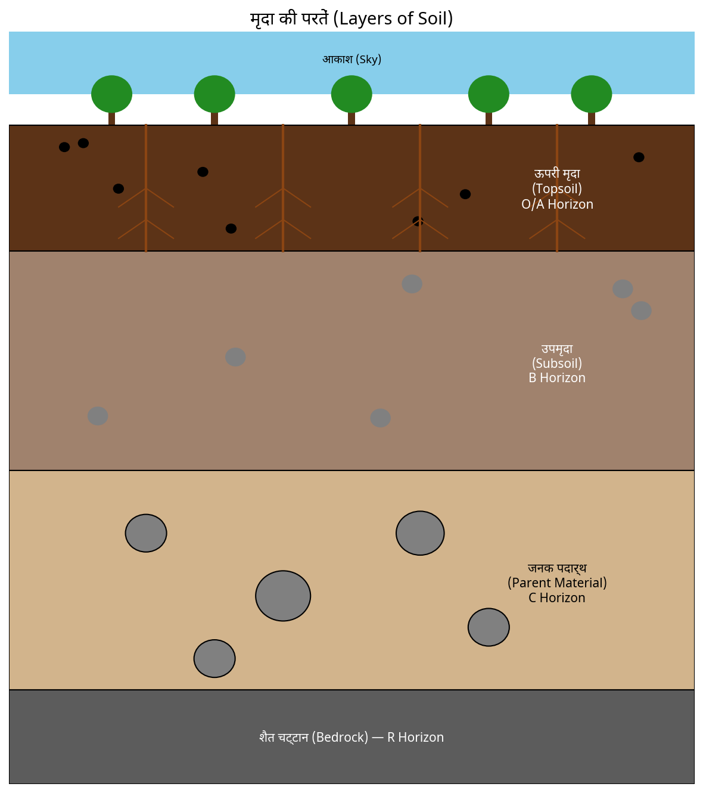
पुनरावृत्ति :—
प्रश्न 1. मिट्टी का निर्माण कैसे होता है इसकी व्याख्या करें?
प्रश्न 2. चिकनी मिट्टी फसलों के लिए कैसे उपयोगी है?
प्रश्न 3. चिकनी मिट्टी और रेतीली मिट्टी के बीच अंतर लिखें?
प्रश्न 4. मिट्टी के क्रॉस सेक्शन को बनाएं और विभिन्न परतों को लेबल करें?
गृहकार्य :—
प्रश्न 1. सही विकल्प पर चिह्न लगाएं:—
जल धारण क्षमता सबसे अधिक है—
(i) रेतीली मिट्टी
(ii) चिकनी मिट्टी
(iii) लोमी मिट्टी
(iv) रेत और लोम का मिश्रण
प्रश्न 2. स्तंभों का मिलान करें:—
| स्तंभ I | स्तंभ II |
|---|---|
| (i) जीवों के लिए एक घर | (a) बड़े कण |
| (ii) रेतीली मिट्टी | (b) सभी प्रकार की मिट्टी |
| (iii) चिकनी मिट्टी | (c) ह्यूमस की कम मात्रा |
| (iv) मिट्टी की ऊपरी परत | (d) मिट्टी में गहरा |
- एक नीली चादर (ऊपर) सूचीबद्ध: "• परकुलन दर • मिट्टी में नमी • मिट्टी में जल का अवशोषण"
- एक नीली चादर (नीचे) सूचीबद्ध: "(a) रेतीली मिट्टी (b) चिकनी मिट्टी (c) दलदली मिट्टी (d) लोमी मिट्टी (वर्गीकरण)"
पाठ योजना 13 — शरीर में गति
पाठ योजना - 13
नाम: निखरिका विद्यालय: सावित्री बाल विद्या मंदिर दिनांक: 19/10/27 विषय: विज्ञान (जीव विज्ञान) पीरियड: 2nd कक्षा: 7th विषय: शरीर की गति उप-विषय: परिचय छात्रों की संख्या: 50 अवधि: 35 - 40 मिनट
सामान्य उद्देश्य:
- विज्ञान सीखने में छात्रों में रुचि विकसित करना।
- छात्रों में कल्पना और तर्क की क्षमता विकसित करना।
- छात्रों में वैज्ञानिक दृष्टिकोण और रुचि विकसित करना।
- समाज के बारे में समझ विकसित करना और उन्हें सामाजिक जीवन में लागू करना।
विशिष्ट उद्देश्य:
- छात्रों को सक्षम बनाना कि वे -
- जानवरों और मनुष्यों में विभिन्न प्रकार के शरीर की गतियों को पहचान सकें।
- जोड़ों (Joints) की गति का प्रदर्शन कर सकें।
- दैनिक जीवन की विभिन्न प्रकार की शरीर की गतियों में प्रयुक्त जोड़ों के प्रकारों की पहचान करें।
- छात्रों में कल्पना और तर्क की क्षमता विकसित करें।
पूर्व ज्ञान:
छात्र पहले से ही दैनिक जीवन में विभिन्न शरीर की गतियों के बारे में जानते हैं।
शिक्षण सहायक सामग्री:
- फ्लिप चार्ट
- जोड़ों का मॉडल
- खड़ी
- बिंदु, डस्टर और श्यामपट्ट, पॉइंटर
प्रस्तावना:
| क्र. सं. | शिक्षक का प्रश्न | छात्र का उत्तर |
|---|---|---|
| 1. | क्या आप शारीरिक व्यायाम का आनंद लेते हैं? | हाँ |
| 2. | गति का नाम बताएं... | उन्हें मोड़कर |
| 3. | क्या आप अपना सिर... हिला सकते हैं? | हाँ |
| 4. | आप ऐसा कैसे करते हैं? | घुटनों पर मोड़कर... |
| 5. | आप अपना पैर... क्यों नहीं मोड़ सकते? | हवा उठाकर अधिक... |
विषय का कथन:
अब, शिक्षक विषय की घोषणा करेंगे — "आज, हम शरीर की गति (Body Movement) के बारे में पढ़ेंगे।"
प्रस्तुतीकरण:
| शिक्षण बिंदु | शिक्षक की क्रिया | छात्र की क्रिया | श्यामपट्ट पर कार्य |
|---|---|---|---|
| विषय: शरीर की गति | शिक्षक गतिविधि द्वारा छात्रों का ध्यान आकर्षित करेंगे। | छात्रों से किसी गतिविधि का प्रदर्शन करने को कहा जाएगा... | विषय: शरीर की गति |
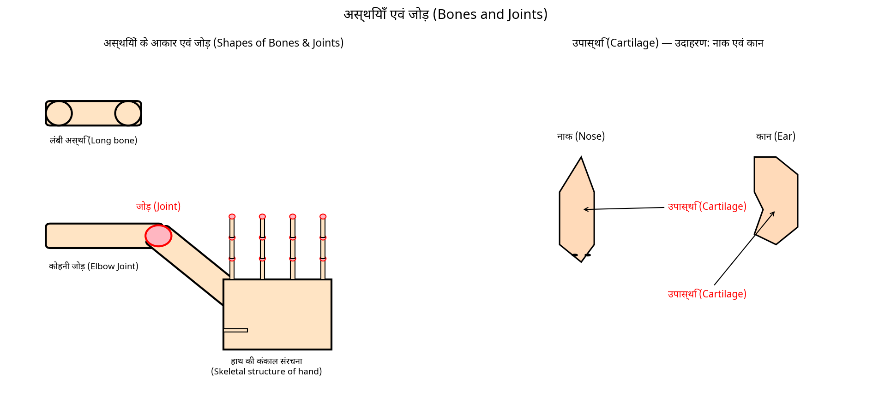
पुनरावृत्ति:
शिक्षक उनसे अपना हाथ उठाने, बाजू को कोहनी पर मोड़ने आदि को कहेंगे। पाठ को अधिरंजित बनाने के लिए।
चित्र विवरण: इस पृष्ठ पर कोई चित्र दिखाई नहीं दे रहा है।
B.Ed विज्ञान/जीव विज्ञान पाठ योजना (जारी पृष्ठ)
प्रस्तुतीकरण (जारी)
| शिक्षण बिंदु | शिक्षक की गतिविधि | छात्र की गतिविधि | श्यामपट्ट पर कार्य |
|---|---|---|---|
| जोड़ (Joints) | शिक्षक छात्रों को उन शरीर के अंगों पर ध्यान देने में सहायता करेंगे जिन्हें वे उपरोक्त गति करते समय मोड़ और घुमा सकते हैं। "वे स्थान जहाँ वे मोड़ सकते हैं, जोड़ कहलाते हैं" — सहायता पर लिखी गई गति की मदद से। | छात्र गतिशील शरीर के अंगों की पहचान करने का प्रयास करेंगे | (चित्र — नीचे देखें) |
| हड्डियाँ (Bones) | शिक्षक एक 3D कोहनी जोड़ मॉडल की मदद से समझने में सहायता करेंगे कि जोड़ों पर एक साथ जुड़े संरचनाओं को "हड्डियाँ" कहा जाता है। | समझने का प्रयास करें | (चित्र — नीचे देखें) |
| कार्टिलेज (Cartilage) | उदाहरण → नाक और कान |
श्यामपट्ट चित्र (जोड़/हड्डियाँ पंक्तियों के बगल में)
शीर्ष पर लेबल किया गया एक हाथ से बना चित्र: "हड्डियों की आकृतियाँ"
- शीर्ष पर एक लंबी हड्डी क्षैतिज रूप से खींची गई (चौड़े होने वाले सिरों वाली हड्डी की आकृति)।
- उसके नीचे, दो हड्डियाँ एक कोण पर मिल रही हैं, लेबल "जोड़" (एक कोहनी-जोड़ जैसी व्यवस्था)।
- नीचे, एक हाथ की कंकाल रचना (हाथ की हड्डियाँ उंगलियों की हड्डियों के साथ) का चित्र, लेबल: "हाथ की कंकाल रचना।"
तालिका (जानवर और गति)
| जानवर | स्थान से स्थानांतरण के लिए उपयोग किया जाने वाला शरीर का अंग | जानवर कैसे चलता है? |
|---|---|---|
| गाय | पैर | चलता है |
| मनुष्य | ||
| सांप | पूरा शरीर | सरकता है |
| पक्षी | ||
| कीट | ||
| मछली |
तालिका: जानवर कैसे स्थान से स्थानांतरण करते हैं?
पुनरावृत्ति :→
- Q1. मानव शरीर का अंग का नाम बताएं
- Q2. हड्डी और जोड़ को परिभाषित करें?
- Q3. मानव शरीर गति कैसे दिखाता है?
गृहकार्य :→
Q1. ** रिक्त स्थान भरें :→
- कार्टिलेज ______ और ______ में मौजूद है।
- हड्डियों और कार्टिलेज के जोड़ शरीर के ______ बनाते हैं।
- हड्डियों के जोड़ शरीर की ______ में सहायता करते हैं।
नोट: यह पृष्ठ एक पाठ योजना का एक अंश प्रतीत होता है (मानव शरीर में गति / हड्डियों और जोड़ों पर विषय पर)। शीर्षक, सामान्य उद्देश्य, विशिष्ट उद्देश्य, पूर्व ज्ञान, शिक्षण सहायक सामग्री, प्रस्तावना, और विषय का कथन इस पृष्ठ पर उपस्थित नहीं हैं — वे पिछले पृष्ठ पर होंगे। दिखाए गए गृहकार्य खंड में केवल "रिक्त स्थान भरें" शामिल है; स्तंभों का मिलान और सही विकल्प पर चिह्न लगाएं खंड, यदि कोई है, तो इस पृष्ठ पर नहीं हैं।
पाठ योजना 14 — खाद्य परिरक्षण
पाठ योजना – 14
नाम: निधानिका तारीख: 21/10/21 विद्यालय: सरस्वती बाल विद्यालय अवधि: 35–40 मिनट विषय: विज्ञान पीरियड: 2nd पाठ्यविषय: सूक्ष्मजीव (Microorganism) :– मित्र और शत्रु कक्षा: VIII उप-विषय: खाद्य संरक्षण छात्रों की संख्या: 30
सामान्य उद्देश्य :→
- विज्ञान सीखने में छात्रों में रुचि विकसित करना।
- कल्पना, तर्क आदि की क्षमता विकसित करना।
- छात्र में वैज्ञानिक दृष्टिकोण और रुचि विकसित करना।
- ज्ञान के बारे में समझ विकसित करना और उन्हें वास्तविक जीवन में लागू करना।
विशिष्ट उद्देश्य :→ छात्र सक्षम होंगे –
- खाद्य संरक्षण (Food preservation) और इसकी विधियों को परिभाषित करना।
- हानिकारक सूक्ष्मजीव (harmful microorganism) द्वारा उत्पन्न खाद्य विषाक्तता (food poisoning) की अवधारणा को याद करना।
- खाद्य संरक्षण की विभिन्न विधियों की व्याख्या करना।
- विभिन्न प्रकार के संरक्षण की पहचान करना।
पूर्व ज्ञान :→
खाद्य मानव जीवन का प्राथमिक स्रोत है और खाद्य को संरक्षित करना मानव को लंबे समय तक खाद्य भंडारित करने में मदद करता है।
शिक्षण सहायक सामग्री :→
मार्कर, डस्टर, पॉइंटर, चॉक और श्यामपट्ट, चार्ट, मॉडल आदि।
प्रस्तावना :→
| क्र. सं. | शिक्षक का प्रश्न | शिक्षक का उत्तर |
|---|---|---|
| 1. | खाद्य संरक्षण (Food preservation) क्या है? | खाद्य विषाक्तता (Food poisoning) कुछ सूक्ष्मजीव (microorganism) द्वारा खाद्य के खराब होने के कारण हो सकती है। |
| 2. | खाद्य विषाक्तता (Food poisoning) क्या कारण बनती है? | येा गंभीर बीमारी और यहां तक कि मृत्यु भी कर सकता है। |
| 3. | यह संरक्षित करना महत्वपूर्ण है | यह बहुत महत्वपूर्ण है। |
| 4. | वे कौन से तरीके हैं जिनसे हम खाद्य को संरक्षित कर सकते हैं। |
विषय का कथन :→
अब, शिक्षक विषय की घोषणा करते हैं, आज, हम "खाद्य संरक्षण" (Food preservation) के बारे में पढ़ेंगे।
प्रस्तुतीकरण :→
| शिक्षण बिंदु | शिक्षक की क्रिया | छात्र की क्रिया | श्यामपट्ट पर कार्य |
|---|---|---|---|
| खाद्य संरक्षण (Food preservation) | छात्र शिक्षक छात्रों को बताते हैं कि यह बहुत महत्वपूर्ण है कि हम खाद्य को खराब होने से रोकने के लिए संरक्षित करें। | छात्र पिछले विषय के कारण प्रतिक्रिया देते हैं। | विषय: खाद्य संरक्षण (Food preservation) |
| रासायनिक विधि (Chemical method) | छात्र शिक्षक समझाते हैं कि जब रासायनिक आमतौर पर सूक्ष्म-जीवों (micro-organism) के विकास को रोकने के लिए उपयोग किए जाते हैं तो उन्हें संरक्षण (preservation) कहा जाता है। छात्र शिक्षक छात्रों से पूछते हैं कि संरक्षण... | वे विषय को समझने की कोशिश करते हैं। |
सीमांत टिप्पणी (हाइलाइट की गई, दायाँ पक्ष): खाद्य संरक्षण प्राकृतिक हो सकता है या बनाया गया प्रक्रिया हो सकता है उदाहरण: सिरका बनाना...
पाठ योजना पृष्ठ (जारी) — खाद्य संरक्षण
बायाँ पृष्ठ
| शिक्षण बिंदु | शिक्षक की क्रिया | छात्र की क्रिया | श्यामपट्ट पर कार्य |
|---|---|---|---|
| नमक, चीनी और सिरके से संरक्षण | छात्र शिक्षक समझाते हैं कि नमक (salt) का उपयोग मांस (meat) और मछली (fish) को संरक्षित करने के लिए पुराने समय से किया जाता रहा है। कैनिंग (Canning) का भी उपयोग आंवला (amla), साँवले आम (saw mangoes), इमली (tamarind) आदि को संरक्षित करने के लिए किया जाता है। इसी प्रकार, चीनी (sugar) का उपयोज जैम (jams), जेली (jellies), स्क्वाश (squashes) को संरक्षित करने के लिए किया जाता है। यह नमी (moisture) की मात्रा को कम करता है जो खाद्य को खराब करने वाले बैक्टीरिया (bacteria) के विकास को रोकता है। इसी प्रकार, तेल (oil) और सिरका (vinegar) का उपयोग अचार (pickles) के खराब होने को रोकता है क्योंकि बैक्टीरिया ऐसे वातावरण में नहीं रह सकते। | ध्यान से सुन रहे हैं | (नीचे जारी देखें:) |
श्यामपट्ट पर कार्य (ऊपर की तालिका से जारी): उनके घरों में उपयोग किए जाते हैं। छात्रों से प्रतिक्रिया प्राप्त करने के बाद, छात्र शिक्षक समझाते हैं कि नमक, तेल, सोडियम बेंजोएट (sodium benzoate), सोडियम मेटाबाइसल्फाइट (sodium metabisulphite) सामान्य संरक्षक (preservatives) हैं जिन्हें अचार (pickles) और जैम (jams) में जोड़ा जाता है ताकि सूक्ष्जीवों (microber) के हमले को रोका जा सके।
| निष्कर्ष | खाद्य संरक्षण भविष्य की आवश्यकताओं के लिए खाद्य को भंडारित करने के लिए महत्वपूर्ण है। |
|---|
चित्र विवरण: एक हाथ से बना रंगीन चित्र जिसमें तीन वस्तुएं दिखाई गई हैं:
- एक ग्लास/जार जिसमें लाल बिंदुदार पदार्थ (जैम) है — लेबल "जैम (Jam)"
- एक पीला आयताकार खंड जिसमें "!!" चिह्न हैं — लेबल "जेली (Jelly)"
- एक बड़ा गुलाबी ग्लास/जार जिसमें बिंदुदार बनावट है — लेबल "अचार (Pickle)"
- चित्र के नीचे, कैप्शन: "खाद्य संरक्षण (Food Preservation)"
इस पृष्ठ पर एक लाल हस्तलिखित टिप्पणी (पढ़ता है "बहुत अच्छा") और एक लाल टिक/चेक चिह्न दिखाई देता है।
दायाँ पृष्ठ
पुनरावृत्ति :-
Q1. आप घर पर खाद्य कैसे संरक्षित करते हैं?
Q2. चीनी (sugar) से खाद्य कैसे संरक्षित किया जा सकता है?
Q3. खाद्य संरक्षण (Food preservation) क्या है? खाद्य का खराब होना एक रासायनिक प्रतिक्रिया है?
गृहकार्य :-
Q1. पैकेट में आने वाला दूध क्यों नहीं खराब होता?
Q2. खाद्य संरक्षण (Food preservation) को परिभाषित करें?
Q3. हम नमक (salt), चीनी (sugar) का उपयोग करके खाद्य कैसे संरक्षित कर सकते हैं?
Q4. सिरका (vinegar) का उपयोग खाद्य संरक्षण के लिए कैसे किया जा सकता है।
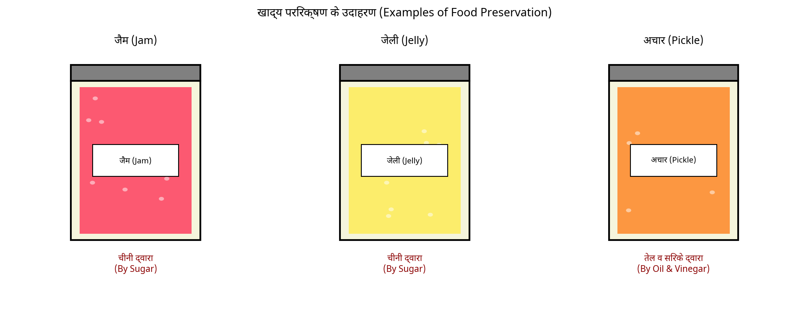
पाठ योजना 15 — रेशे से वस्त्र तक
पाठ योजना-15
हेडर जानकारी
| क्षेत्र | विवरण | क्षेत्र | विवरण |
|---|---|---|---|
| नाम: | निहारिका | तारीख: | 23 |
| विद्यालय: | सरस्वती बाल विद्या. | अवधि: | 35-40 मिनट |
| विषय: | विज्ञान | पीरियड: | 8वीं |
| पाठ्यविषय: | रेशा से कपड़ा | कक्षा: | 6वीं |
| उप-विषय: | रेशों के प्रकार | छात्रों की संख्या: | 45 |
सामान्य उद्देश्य →
- छात्र में रुचि विकसित करना।
- तर्क, कल्पना और अवलोकन क्षमता विकसित करना।
- छात्रों में वैज्ञानिक दृष्टिकोण और रुचि विकसित करना।
- विज्ञान की उपयोगिता को समझना और उन्हें वास्तविक जीवन में लागू करना।
विशिष्ट उद्देश्य →
- छात्रों को रेशों के प्रकार — प्राकृतिक रेशे या कृत्रिम रेशे के बारे में ज्ञान प्राप्त करने में सक्षम बनाना।
- कपास और जूट रेशों को उनके संबंधित पौधों से प्राप्त करने की प्रक्रिया को समझना।
- इन रेशों के गुणों के बीच अंतर करना और उनके उदाहरणों से परिचित होना।
पूर्व ज्ञान →
छात्र पहले से ही कपड़ों के प्रकार, गर्मियों और सर्दियों में ऊनी कपड़ों से परिचित हैं।
शिक्षण सहायक सामग्री →
खड़ी, डस्टर, पॉइंटर, चार्ट, ब्लैकबोर्ड, व्हाइटबोर्ड, मॉडल और कुछ अन्य वस्तुएं हैं —
- कपास का ऊन
- जूट का थैला
- एक नमूना —
- कपास का कपड़ा / फैब्रिक
- जूट का फैब्रिक — रेशम
- नाइलॉन — ऊन
- रेयॉन — पॉलिएस्टर
प्रस्तावना →
| क्र. सं. | शिक्षक का प्रश्न | छात्र का उत्तर |
|---|---|---|
| 1. | क्या आप जानते हैं कि हम सर्दियों में किस प्रकार के कपड़े पहनते हैं | ऊनी |
| 2. | और गर्मियों में? | कपास। |
| 3. | ये अलग-अलग प्रकार के कपड़े कहां से आते हैं? | ऊन भेड़ से। |
| 4. | और कपास? | नहीं जानता —— |
विषय का कथन →
अब, शिक्षक विषय की घोषणा करेंगे, आज हम "रेशों के प्रकार" के बारे में पढ़ेंगे।
इस पृष्ठ पर कोई चित्र नहीं है। कोई प्रस्तुतीकरण तालिका, पुनरावृत्ति, या गृहकार्य खंड इस पृष्ठ पर नहीं दिखाई दे रहा है — यह अगले पृष्ठों पर जारी लगता है।
पाठ योजना (हस्तलिखित) — निकाला गया पाठ
प्रस्तुतीकरण :→
| शिक्षण बिंदु | शिक्षक की क्रिया | छात्र की क्रिया | श्यामपट्ट पर कार्य |
|---|---|---|---|
| प्राकृतिक और कृत्रिम रेशा | शिक्षक चर्चा करेंगे कि सामानतः रेशे के 2 प्रकार होते हैं। प्राकृतिक रेशे, कृत्रिम रेशे। ये रेशे छात्रों को उनकी परिभाषा और उदाहरण को समझने में सहायता करेंगे | सिखाए गए अवधारणा को समझने की कोशिश करें | विषय : रेशों के प्रकार |
| प्राकृतिक रेशा : कपास | शिक्षक छात्रों के बीच कपास बांटेंगे और छात्र से कहेंगे कि वे इसे अलग करें और किनारे को देखें। तौलिया, सैंडल कपास रेशे से बने होते हैं। शिक्षक फिर कपास की खेती की प्रक्रिया पर चर्चा करेंगे | वे सीखने में सक्रिय रूप से शामिल होंगे | (चित्र चिपकाया गया — नीचे देखें) |
| जूट | शिक्षक जूट के थैले का एक नमूना प्रस्तुत करेंगे और रेशे की खेती पर चर्चा करेंगे | देखने की कोशिश करें। |
चित्र विवरण
श्यामपट्ट पर कार्य कॉलम में एक छोटा वर्ग (फोटो/चित्र) चिपकाया गया है। इसमें दो गोल, फफुंदा कपास के बोल (फीका गुलाबी/क्रीम रंग के ब्लॉब, एक के ऊपर एक, स्केच शैली में बनाए गए) दिखाए गए हैं। चित्र के ऊपर हस्तलिखित लेबल है: "कपास"।
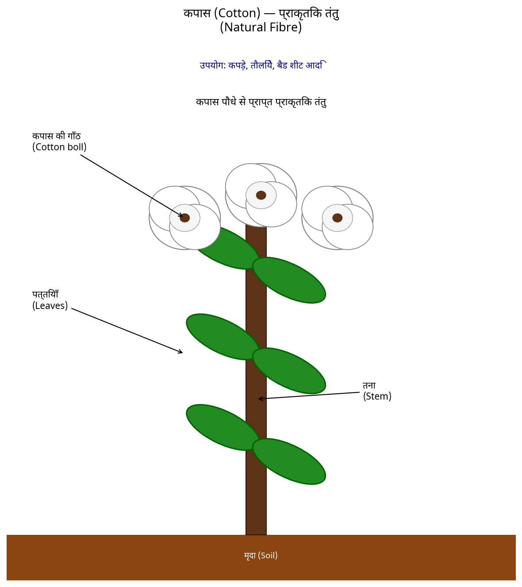
पुनरावृत्ति :→
प्रश्न 1. रेशा क्या है? प्रश्न 2. कपड़ा क्या है? प्रश्न 3. अलग-अलग प्रकार के रेशों को परिभाषित करें या वर्गीकृत करें।
गृहकार्य :→
प्रश्न 1. रेशा क्या है? प्रश्न 2. नोट लिखें — (क) टेलिया (ख) कपास (ग) पॉलिएस्टर (घ) नाइलॉन (ङ) कृत्रिम रेशा (च) प्राकृतिक रेशा